Book Title | Author & Illustrator | Book Cover | Description |
Beautiful Stuff from Nature - More Learning with Found Materials | Cathy Weisman Topal | 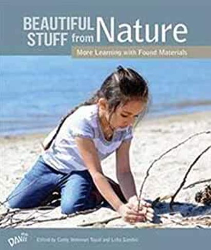 | Beautiful Stuff from Nature illustrates unique stories from teachers across North America who were challenged to explore their outdoor spaces with children to see where their interests lead. |
Sharing Nature: Nature Awareness Activities for All Ages | Joseph Cornell | 
| Sharing Nature with Children sparked a worldwide revolution that connected millions of parents, educators, and children with nature. Published in over twenty languages, this classic has now been combined with Sharing the Joy of Nature to make a treasury of Joseph Cornell’s best-loved nature games for children and adults. Forword by Richard Louv. |
Messy Maths - A Playful, Outdoor Approach for Early Years | Juliet Robertson | 
| In Messy Maths: A Playful, Outdoor Approach for Early Years, Juliet Robertson offers a rich resource of ideas that will inspire you to tap into the endless supply of patterns, textures, colours and quantities of the outdoors and deepen children's understanding of maths through hands-on experience. Juliet believes being outside makes maths real. In the classroom environment, maths can seem disconnected from everyday reality but real maths is really messy. Lots of outdoor play and engaging activity along the way is a must, as being outside enables connections to be made between the hands, heart and head, and lays the foundations for more complex work as children grow, develop and learn. Following on from the success of Dirty Teaching (ISBN 978-178135107-9), Messy Maths reimagines the outdoor space through a mathematical lens providing a treasure trove of suggestions that will empower you to blend outdoor learning into your teaching practice. It is not a 'how to' guide, but rather an easy-to-use reference book replete with ready-to-use games and open-ended ideas designed to help children become confident and skilled in thinking about, using and exploring abstract mathematical concepts as they play outside. |
Dirty Teaching | Juliet Robertson | 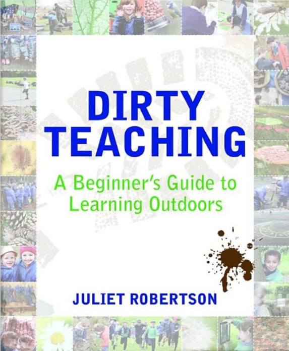 | One of the keys to a happy and creative classroom is getting out of it and this book will give you the confidence to do just that. Drawing on academic research, Juliet explains why learning outdoors is so beneficial and provides plenty of tips and activities to help you to integrate outdoor learning into your teaching practice, providing a broad range of engaging outdoor experiences for your students. |
Forest and Nature School in Canada: A Head, Heart, Hands Approach to Outdoor Learning | Heather Andrachuk, Tricia Edgar, Petra Eperjesi, Chris Filler, Jenny Groves, Jessica Kaknevicius, Reina Lahtinen, Jen Mason, Laura Molyneux, Lindsay Morcom, Gillian Petrini, Laura Piersol, Marlene Power, Jay Young | 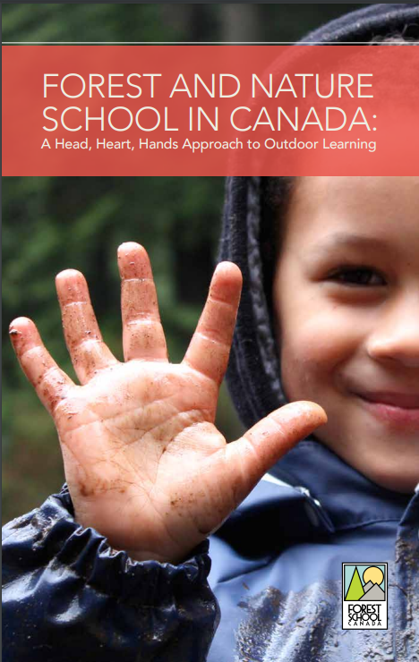 | The educators who have helped write this guide have worked in and supported FNS both from a theoretical and practical perspective, and most have been running FNS programs from 2008 onwards. We often wished we had a resource such as this, and after years of practice we know that more supports are needed for educators trying to move teaching outdoors, into the natural world.
PDF Link:
https://childnature.ca/wp-content/uploads/2017/10/FSC-Guide-1.pdf |
Natural Curiosity 2nd Edition: A Resource for Educators | Doug Anderson, Julie Comay, Lorraine Chiarotto | 
| The second edition of Natural Curiosity supports a stronger basic awareness of Indigenous perspectives and their importance to environmental education. The Indigenous lens in this edition represents a cross-cultural encounter supporting what can become an ongoing dialogue and evolution of practice in environmental inquiry. Some important questions are raised that challenge us to think in very different ways about things as fundamental as the meaning of knowledge. |
Evergreen General Gardening Guide | Toyota Evergreen Learning Grounds |
| This general guidebook on creating and maintaining food gardens was created for schools to use in their greening projects but it's a valuable, comprehensive tool for anyone looking to start an outdoor garden.
PDF Link:
https://www.evergreen.ca/downloads/pdfs/Food_Gardening_for_Schools.pdf
|
Wild Learning: Practical Ideas to Bring Teaching Outdoors | Rachel Tidd | 
| Wild Learning answers a call in the educational community for practical, easy-to-implement activities that bring core curriculum out of the classroom and into the outdoors. Outdoor learning has risen in popularity in recent years, and it has tremendous benefits. Being outside is healthier, helps children form a strong connection to the natural world, supports a variety of learning styles, increases engagement and motivation, and improves mental health. This book gives teachers practical activities that they can immediately implement, and helps educators overcome common barriers to outdoor instruction. These activities can be done in common outdoor spaces that are accessible to teachers in all school settings, and they are adaptable to their current curriculum―not an extra thing to try to fit into their day. |
Urban Forest School: Outdoor Adventures and Skills for City Kids
| Naomi Walmsley, Dan Westall | 
| Venture out to your local greenspace or just into your backyard, and try the amazing array of outdoor activities - from building a hidden sheet den to creating watering stations for bees.
While you are there, scavenge and forage for raw materials and then extend the fun with creative makes and recipes to do back at home such as leaf printing, stick boats and stinging nettle crisps. Get to know the wild parts of your city or town with handy bug, plant and tree ID sections, plus a scavenger hunt and cloud-spotting game that can be done when out and about. Games to play with organized groups or with your family and friends adds another dimension to this book that is bursting with ideas for urban outdoor adventures. |
Forest School Adventure: Outdoor Skills and Play for Children | Naomi Walmsley, Dan Westall | 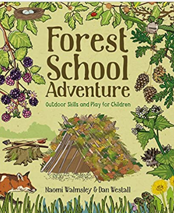 | From essential bushcraft basics and Stone Age skills to joyful outdoor play, Forest School Adventure is packed with ideas to bring your little ones closer to nature and all its magical offerings. The book is divided into four sections―bushcraft, wild food, nature awareness, and games. Learn how to:
light a fire without matches, build a shelter to sleep in, cook on a fire, hunt for bugs and much more. Young children will be immersed in imaginative, messy play and crafts, while older ones can work on more complex activities like stone tool making and sourcing water. The idea of a forest school―an outdoor program that uses the woods and forests as a means to build independence and self-esteem in children, will result in confidence, bonding, and will bring to life the thrilling reality of sleeping in a cave or savoring your first-ever foraged meal! |
Forest School Handbook | Naomi Walmsley, Dan Westall | 
| Forest School Handbook is a lively collection of activities, crafts, bushcraft skills and nature-based play which will inspire kids to thrive outside. Whether just out for a walk, going camping or exploring in the woods, this handy-sized book will be your essential guide for connecting with the natural world. Packed with ideas and activities for children of all ages, there are bushcraft basics, survival skills, nature crafts and ideas for both energizing and peaceful outdoor play. Encouraging controlled risk taking, boosting social skills, wellbeing and a healthy resilience, this is the ultimate way to avoid battles over screen time and classroom-induced fatigue. Build a shelter from what you find around you, design a natural collage, tie useful knots, get to know a tree, light a fire, filter dirty water, make charcoal, go on a night walk, make a bug hotel, create a mini village, whittle a stick and much more. |
Play the Forest School Way: Woodland Games, Crafts, and Skills for Adventurous Kids | Peter Houghton, Jane Worroll | 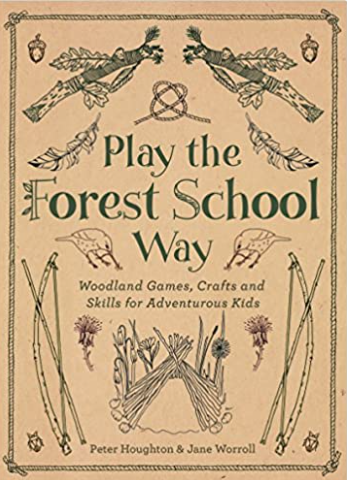 | The rise of the grassroots Forest School movement in recent years is part of a groundswell of concern about the wellbeing of our children, with many media scare stories about child obesity, "nature deficit disorder" (as described in Last Child in the Woods), and lack of exposure to risk.
This outdoor adventure manual is the antidote! Packed full of ideas, from making nature jewelry and whittling a bow and arrow, to building a shelter and foraging for food, it also celebrates the Forest School philosophy of encouraging self-esteem, confidence, and social skills through engagement with nature. The activities contain variations for varied age groups, small groups like play dates or birthday parties, as well as things to do with just one or two children. Parents are encouraged to guide the play but the activity instructions are written in a simple style with fun illustrations so that kids can take the lead as well. |
A Year of Forest School: Outdoor Play and Skill-Building Fun for Every Season | Peter Houghton, Jane Worroll | 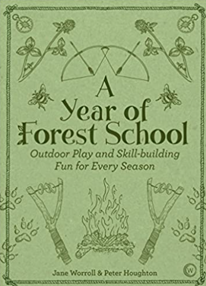 | More games, crafts and skills Forest School style, building on the success of Play the Forest School Way. This book is organized by season to encourage kids to get outdoors come rain, shine or snow!
Following on from the bestselling Play the Forest School Way, here is a brilliant selection of brand-new games, crafts and activities to get kids developing new skills and exploring the natural world all year round. Structured around the four seasons of the year, each chapter is packed full of step-by-step Forest School games and activities that harmonize with the weather and what’s happening in nature at that time of year, with a nod to seasonal festivals such as Easter and Christmas. In spring, for example, you could make a mud birthday cake to celebrate Earth Day on 22 April, or (inspired by bird song) craft sistrums from sticks and bottle tops, or make a clay hare and enjoy dandelion tea and a chocolate egg hunt at a spring day out. At Forest School, children return to the same location again and again, building a lasting connection with a specific part of the natural world, and this book in its year-round approach will bring this aspect of Forest School play to the fore. Each of the four seasonal chapters includes a description of an extended session (combining active and quieter activities plus, for some, an idea for foraging/cooking) to guide Forest School leaders planning themed days and parents looking for party inspiration or nature days out. |
The Essential Guide to Forest School and Nature Pedagogy | Jon Cree, Marina Robb | 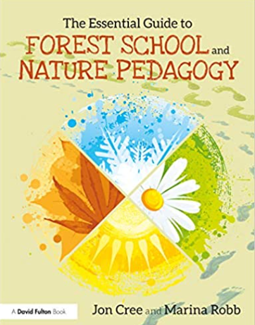 | This book is a complete guide to Forest School provision and Nature Pedagogy and it examines the models, methods, worldviews and values that underpin teaching in nature. Cree and Robb show how a robust Nature Pedagogy can support learning, behaviour, and physical and emotional wellbeing, and, importantly, a deeper relationship with the natural world. They offer an overview of what a Forest School programme could look like through the year. The Essential Guide to Forest School and Nature Pedagogy provides ‘real-life’ examples from a variety of contexts, sample session plans and detailed guidance on using language, crafting and working with the natural world. This accessible resource guides readers along the Forest School path, covering topics such as: the history of nature education; our sensory system in nature; Forest School ethos and worldview and playing and crafting in the natural world. Guiding practitioners through planning for a programme, including taking care of a woodland site and preparing all the essential policies and procedures for working with groups and nature, this book is written by dedicated Forest School and nature education experts and is essential reading for settings, schools, youth groups, families and anyone working with children and young people. |
Foraging with Kids: 52 Wild and Free Edibles to Enjoy with Your Children | Adele Noedar, Lizzie Harper | 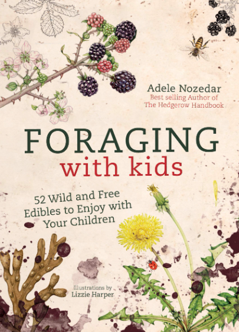 | In today’s world of increasingly sedentary lifestyles and a growing detachment from the food that we eat, it has never been more important to encourage children to put down their screens, get outside and engage with the natural world around them. Foraging with Kids is a fun, practical book for parents to work through with their children that encourages families to interact with their environment and gain knowledge and practical understanding of the natural world through exploration and play. The projects are based around 50 easy-to-identify plants that are abundant in parks, forests and hedgerows worldwide, making the challenge of discovering functional flora just as achievable to those who live in the city as in the countryside. Once they have foraged their plants, children will be amazed by the diverse practical uses that they can set them to; from making soap from conkers or setting a delicious egg-free custard with plantain, to stopping minor cuts from bleeding with hedge woundwort. Children will take great pride in seeing their gatherings forming part of the family meal and parents will be amazed at how even the most vegetable-averse child will develop an enthusiastic appetite for a meal that they have contributed to. Illustrated throughout with beautiful hand drawings and with essential information on plant facts and identification, as well as a diverse range of engaging, practical projects that the whole family will want to get involved with, this is the perfect book for anyone who wants the children under their care to get outside, connect with nature and have a lot of fun in the process. |
The Big Book of Nature Activities | Drew Monkman, Jacob Rodenburg | 
| The Big Book of Nature Activities is a comprehensive guide for parents and educators to help youth of all ages explore, appreciate, and connect with the natural world. This rich, fully illustrated compendium is packed with crafts, stories, information, and inspiration to make outdoor learning fun! The Big Book of Nature Activities features: - Nature-based skills and activities such as species identification, photography, journaling, and the judicious use of digital technology
- Ideas, games, and activities grounded in what’s happening in nature each season
- Core concepts that promote environmental literacy, such as climate change and the mechanisms and wonder of evolution, explained using a child-friendly, engaging approach
- Lists of key species and happenings to observe throughout the year across most of North America
|
The School Garden Curriculum: An Integrated K-8 Guide for Discovering Science, Ecology, and Whole-Systems Thinking | Kaci Rae Christopher | 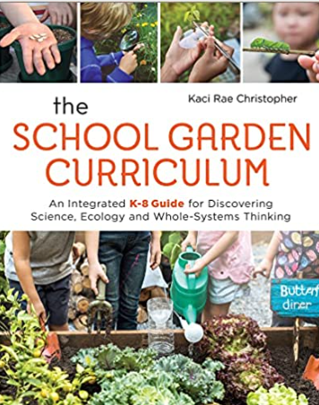 | The School Garden Curriculum offers a unique and comprehensive framework, enabling students to grow their knowledge throughout the school year and build on it from kindergarten to eighth grade. From seasonal garden activities to inquiry projects and science-skill building, children will develop organic gardening solutions, a positive land ethic, systems thinking, and instincts for ecological stewardship.
The world needs young people to grow into strong, scientifically literate environmental stewards. Learning gardens are great places to build this knowledge, yet until now there has been a lack of a multi-grade curriculum for school-wide teaching aimed at fostering a connection with the Earth.
The book offers: - A complete K-8 school-wide framework
- Over 200 engaging, weekly lesson plans – ready to share
- Place-based activities, immersive learning, and hands-on activities
- Integration of science, critical thinking, permaculture, and life skills
- Links to Next Generation Science Standards
- Further resources and information sources.
A model and guide for all educators, The School Garden Curriculum is the complete package for any school wishing to use ecosystem perspectives, science, and permaculture to connect children to positive land ethics, personal responsibility, and wonder, while building vital lifelong skills. |
The Book of Nature Connection: 70 Sensory Activities for All Ages | Jacob Rodenburg | 
| The Book of Nature Connection is packed with fun activities for using all our senses to engage with nature in a deep and nourishing way. From "extenda-ears" and acorn whistles to bird calls, camouflage games, and scent scavenger hunts, enjoy over 70 diverse, engaging, sensory activities for all ages that promote mindfulness and nature connection. With activities grouped by the main senses – hearing, sight, smell, touch, and taste – plus sensory walks and group games, The Book of Nature Connection is both a powerful learning tool kit and the cure for sensory anesthesia brought on by screen time and lives lived indoors. Whisper in birds, be dazzled by nature's kaleidoscope of colors, taste the freshness of each season, learn to savor the scented world of evergreens, hug a tree and feel the bark against your cheek. Spending time in nature with all senses tuned and primed helps us feel like we belong to the natural world – and in belonging, we come to feel more connected, nourished, and alive. Ideal for educators, camp and youth leaders, caregivers and parents, and anyone looking to reconnect and become a nature sommelier! |
How to Teach Nature Journaling | John Muir Laws, Emilie Lygren, Amy Tan | 
| The first-ever comprehensive book devoted to helping educators use nature journaling as an inspiring teaching tool to engage young people with wild places.
In their workshops, John Muir Laws and Emilie Lygren are often asked the how-tos of teaching nature journaling: how to manage student groups in the outdoors, teach drawing skills (especially from those who profess to have none), connect journaling to educational standards, and incorporate journaling into longer lessons. This book, expanding on the philosophy and methods of The Laws Guide to Nature Drawing and Journaling puts together curriculum plans, advice, and in-the-field experience so that educators of all stripes can leap into journaling with their students. The approaches are designed to work in a range of ecosystems and settings, and are suitable for classroom teachers, outdoor educators, camp counselors, and homeschooling parents. Full-color illustrations and sample journal pages from notable naturalists show how to put each lesson into practice. Field-tested by over a hundred educators, this book includes dozens of activities that easily support the Common Core and the Next Generation Science Standards—and, just as important, it will show kids and mentors alike how to recognize the wonder and intrigue in their midst. |
The Curious Nature Guide: Explore the Natural Wonders All Around You | Clare Walker Leslie | 
| With dozens of simple prompts and exercises, best-selling author, naturalist, and artist Clare Walker Leslie invites you to step outside for just a few minutes a day, reignite your sense of wonder about the natural world, and discover the peace and grounding that come from connecting with nature. Using stunning photography as well as the author’s own original illustrations, The Curious Nature Guide will inspire you to use all of your senses to notice the colors, sounds, smells, and textures of the trees, plants, animals, birds, insects, clouds, and other features that can be seen right outside your home, no matter where you live. Sketch or write about one exceptional nature image each day; learn to identify cloud types and the weather they bring; or create a record of what you see each day as you walk your dog. Easy, enjoyable, and enlightening, these simple exercises will transform your view of the world and your place within it. |
Keeping a Nature Journal | Clare Walker Leslie | 
| Originally published in 2000 with endorsements from E.O. Wilson and Jane Goodall, Clare Walker Leslie’s Keeping a Nature Journal was at the forefront of the nature observation and journaling movement. Leslie’s approach has long been acclaimed for its accessible style of teaching people to see, witness, and appreciate the wonders of nature, and her classic guide is still used by individuals, groups, and educators ranging from elementary school teachers to college-level instructors. The third edition features more of Leslie’s step-by-step drawing techniques, a new selection of pages from her own journals (which she’s kept for 40 years), and an expanded range of prompts for observing particular aspects of the natural world in any location. With an emphasis on learning to see and observe, Leslie shows how drawing nature doesn’t require special skills, artistic ability, or even nature knowledge, and it is a tool everyone can use to record observations and experience the benefits of a stronger connection to the natural world. |
The Outdoor Classroom in Practice, Ages 3-7: A Month-By-Month Guide to Forest School Provision | Karen Constable | 
| The Outdoor Classroom in Practice, Ages 3-7 offers guidance on how the outdoors can be used to teach and challenge children across a range of settings by drawing on forest school practice. Following a month-by-month format, it explores theme-related play experiences, planning, evaluations of how the ideas described were carried out and what impact they had on children's learning and development. |
Teaching the Primary Curriculum Outdoors | Learning Through Landscapes | 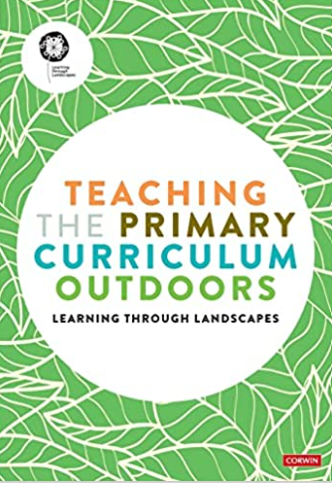 | Research evidence consistently shows that an outdoor learning environment can improve behaviour, engagement and encourage more active participation in learning. So why keep learning in a classroom?
In reality, we know the challenges teachers face. We know the barriers that get in the way of taking learning outside. Learning through Landscapes has three decades of experience supporting teachers with the everyday challenges of teaching outdoors. Through this real life understanding of teaching and step by step guidance, this book shows you that every curriculum subject in primary schools can be taught outdoors.
Through the pages of this book, Learning through Landscapes shows you that learning outdoors not only improves the health, wellbeing and attainment of the children in your class - it also brings joy to your teaching. |
Wild Days: Outdoor Play for Young Adventurers | Richard Irvine | 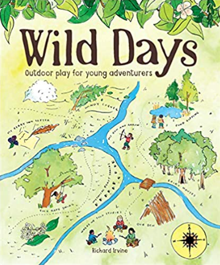 | Perfect for inspiring kids to get out in the fresh air, this brilliant book is crammed full of outdoor activities and fun for children. As well as gaining some simple survival skills, children will learn more about the world around them and their place within it. Practical, creative and educational, the tasks concentrate on leaving only a positive trace, while enjoying the great outdoors. |
Sticks and Stones: A Kid’s Guide to Building and Exploring in the Great Outdoors | Melissa Lennig | 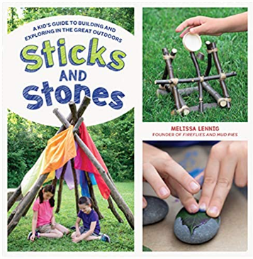 | Discover a treasure trove of exciting nature-based building, engineering, and artistic ideas for children in Sticks and Stones. This comprehensive guide features tools, toys, and games kids can create right outside their door. Kids will love building cabins, bridges, dams, rock gardens, and more. They’ll discover that creating art is more fun outdoors as they learn to make stone pendants, ochre paint, and weaving. A variety of large and small-scale activities boost engineering, creative, and problem-solving skills, all while promoting fun. With simple tools and materials a branch becomes a fishing pole, and logs turn into a simple seesaw. Opportunities and materials for productive play exist everywhere in nature. Author Melissa Lennig (of the blog Fireflies and Mud Pies) introduces today’s screen-overloaded kids to a world of exploring and adventure. Whether camping in the woods or hanging out in the backyard, children will marvel at the wonderful, useful tools and playthings they can create with natural objects. They’ll also learn about STEAM principles, campfire chemistry, why building with blocks is so powerful, and how mindfulness techniques can reduce stress. |
On the Nature Trail: What Will You Find? | Oana Befort | 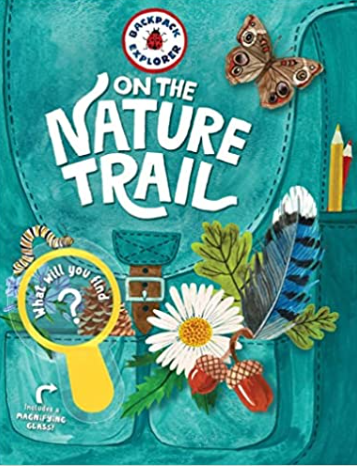 | Jump-start curiosity with this take-along field guide for children ages 4 to 8. From worms, birds, and spiders to trees, flowers, and clouds, young explorers learn what to look and listen for wherever they are — whether in a nature preserve, an urban park, or a suburban backyard. Seek-and-find lists, on-the-trail art projects, and discovery games get kids engaged in hands-on learning about nature, and a real pull-out magnifying glass helps them get a close-up glimpse of leaf veins, seed pods, and tiny insects. Filled with activities, checklists, and stickers, this interactive nature guide belongs in every kid’s backpack. |
Get Outside: The Kids Guide to Fun in the Great Outdoors | Jane Drake, Ann Love, Heather Collins | 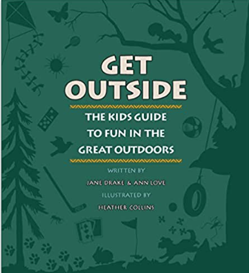 | This book is a key to the world of fun beyond the front door. Activities are divided into four categories (Nature Lover, Outdoor Fun and Games, Cozy Inside and Look to the Sky), where readers will find instructions for making things like sundials, bird feeders and kites, as well as rules for games such as 500 Up, Spud and Shinny. Accompanying these descriptions are fun facts and scientific, historic and cultural context. The passage on playing jacks, for example, includes a sidebar about a similar game played by the ancient Greeks. Children in Northern climes will love learning to play traditional First Nations winter games and be thrilled to find out how to create a backyard ice rink. It's a wealth of fun and fascination that will captivate any young person -- who won't mind ditching the video game for the great outdoors. |
Outdoor Learning in the Early Years: Management and Innovation | Helen Bilton | 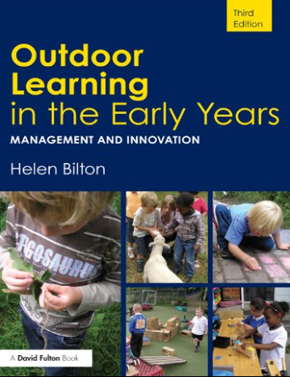 | Now in its third edition, Outdoor Learning in the Early Years is the complete guide to creating effective outdoor environments for young children’s learning. Comprehensively revised and updated throughout, this book covers every aspect of working outdoors in the early years and fully explains the importance of outdoor play to children’s development. |
Winter World: The Ingenuity of Animal Survival | Bernd Heinrich | 
| From flying squirrels to grizzly bears, and from torpid turtles to insects with antifreeze, the animal kingdom relies on some staggering evolutionary innovations to survive winter. Unlike their human counterparts, who must alter the environment to accommodate physical limitations, animals are adaptable to an amazing range of conditions. Examining everything from food sources in the extremely barren winter land-scape to the chemical composition that allows certain creatures to survive, Heinrich's Winter World awakens the largely undiscovered mysteries by which nature sustains herself through winter's harsh, cruel exigencies. |
The Green Hour: A Daily Dose of Nature for Happier, Healthier, Smarter Kids | Todd Christopher | 
| The National Wildlife Federation, on its website GreenHour.org, recommends that parents give their kids a “Green Hour” every day—a time for unstructured play and interaction with the natural world. Whether in the backyard, the local park, or a green space farther afield, time spent outdoors is essential to the healthy development of young minds, bodies, and spirits.
Todd Christopher, the creator of the GreenHour.org, has filled this book with activities designed to encourage discovery, creative play, and a wonder of nature. Here you'll find a range of projects, fun facts, and science lessons meant to engage and invigorate your child, as well as the practical advice for parents that makes getting outdoors easy and worry-free. With creative, science-based ideas for a variety of natural settings, getting your family's daily dose of nature just got easier. |
Ecological Literacy: Educating Our Children for a Sustainable World | Michael K. Stone, Zenobia Barlow, Fritjof Capra | 
| Our efforts to build a sustainable world cannot succeed unless future generations learn how to partner with natural systems to our mutual benefit. In other words, children must become "ecologically literate." The concept of ecological literacy advanced by this book's creators, the Center for Ecoliteracy in Berkeley, California, goes beyond the discipline of environmental education. It aims, says David Orr in his foreword, "toward a deeper transformation of the substance, process, and scope of education at all levels"-familial, geographic, ecological, and political. The reports and essays gathered here reveal the remarkable work being done by the Center's network of partners. In one middle school, for example, culinary icon Alice Waters founded a program that not only gives students healthy meals but teaches them to garden-and thus to study life cycles and energy flows. Other hands-on student projects described here range from stream restoration and watershed exploration to confronting environmental justice issues at the neighborhood level. |
The Global Forest: 40 Ways Trees Can Save Us | Diana Beresford- Kroeger | 
| Renowned scientist Diana Beresford-Kroeger presents an unforgettable and highly original work of natural history with The Global Forest. She explores the fascinating and largely untapped ecological and pharmaceutical properties of trees: leaves that can comb the air of particulate pollution, fatty acids in the nuts of hickory and walnut trees that promote brain development, the compound in the water ash that helps prevent cancer, aerosols in pine trees that calm nerves. In precise, imaginative, and poetic prose, she describes the complexity and beauty of forests, as well as the environmental dangers they face. The author's indisputable passion for her subject matter will inspire readers to look at trees, and at their own connection to the natural world, with newfound awe. |
Last Child in the Woods: Saving Our Children From Nature-Deficit Disorder | Richard Louv | 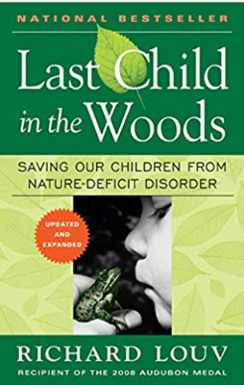 | As children’s connections to nature diminish and the social, psychological, and spiritual implications become apparent, new research shows that nature can offer powerful therapy for such maladies as depression, obesity, and attention deficit disorder. Environment-based education dramatically improves standardized test scores and grade-point averages and develops skills in problem solving, critical thinking, and decision making. Anecdotal evidence strongly suggests that childhood experiences in nature stimulate creativity.
In Last Child in the Woods, Louv talks with parents, children, teachers, scientists, religious leaders, child-development researchers, and environmentalists who recognize the threat and offer solutions. Louv shows us an alternative future, one in which parents help their kids experience the natural world more deeply—and find the joy of family connectedness in the process. |
The Hidden Life of Trees: What They Feel, How They Communicate - Discoveries From a Secret World | Peter Wohlleben, Tim Flannery | 
| Are trees social beings? In The Hidden Life of Trees forester and author Peter Wohlleben convincingly makes the case that, yes, the forest is a social network. He draws on groundbreaking scientific discoveries to describe how trees are like human families: tree parents live together with their children, communicate with them, support them as they grow, share nutrients with those who are sick or struggling, and even warn each other of impending dangers. Wohlleben also shares his deep love of woods and forests, explaining the amazing processes of life, death, and regeneration that he has observed in his woodland. |
Let Them Eat Dirt: Saving Your Child From an Oversanitized World | B. Brett Finlay, Marie-Claire Arrieta | 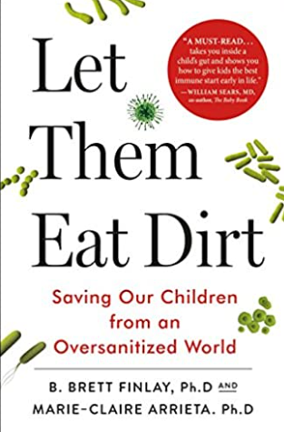 | Babies and young kids are being raised in surroundings that are increasingly cleaner, more hyper hygienic, and more disinfected than ever before. As a result, the beneficial bacteria in their bodies is being altered, promoting conditions and diseases such as obesity, diabetes, asthma, allergies, and autism. As Let Them Eat Dirt shows, there is much that parents can do about this, including breastfeeding if possible, getting a dog, and avoiding antibiotics unless necessary—and yes, it is OK to let kids get a bit dirty. |
The Nature Principle: Reconnecting with Life in a Virtual Age | Richard Louv | 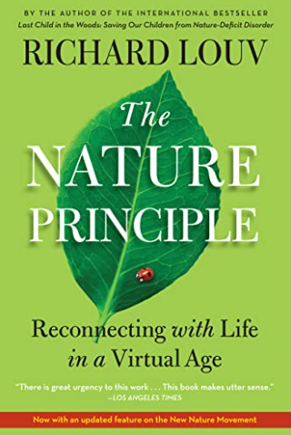 | For many of us, thinking about the future conjures up images of Cormac McCarthy’s The Road: a post-apocalyptic dystopia stripped of nature. Richard Louv, author of the landmark bestseller Last Child in the Woods, urges us to change our vision of the future, suggesting that if we reconceive environmentalism and sustainability, they will evolve into a larger movement that will touch every part of society.
This New Nature Movement taps into the restorative powers of the natural world to boost mental acuity and creativity; promote health and wellness; build smarter and more sustainable businesses, communities, and economies; and ultimately strengthen human bonds. Supported by groundbreaking research, anecdotal evidence, and compelling personal stories, Louv offers renewed optimism while challenging us to rethink the way we live. |
Camping & Backpacking with Children | Steven Boga | 
| A guide to making outdoor experiences enjoyable for parents and children covers proper equipment, hiking, living in camp, coping with the weather, staying healthy, and surviving in the wild. |
A Little Bit of Dirt: 55+ Science and Art Activities to Reconnect Children With Nature | Asia Citro | 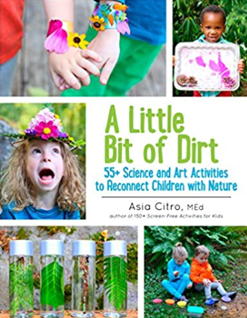 | Bursting with creative hands-on outdoor science and art activities, A Little Bit of Dirt is full of motivation to get outside and explore. Whether you're investigating the health of your local stream, making beautiful acrylic sunprints with leaves and flowers, running an experiment with your backyard birds, or concocting nature potions, you'll be fostering an important connection with nature. The engaging activities encourage the use of the senses and imagination and are perfect for all ages. Discover more about the natural world waiting just outside your door! |
Put On Your Owl Eyes: Open Your Senses & Discover Nature’s Secrets; Mapping, Tracking & Journaling Activities | Devin Franklin | 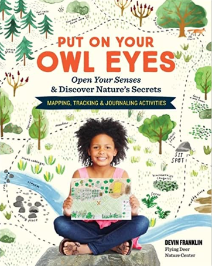 | Children will see the natural world around them with brand new eyes, as they learn to follow its signs, hear its language, and understand its secrets. With this unique and compelling book written by expert environmental educator Devin Franklin, kids aged 8 to 13 will build their own relationship with nature through finding a “Sit Spot” — an outdoor space in the backyard, in a field or in the woods, in a vacant lot or a city park — where they can stop, observe, and become familiar with the flora and fauna that live there. From the Six Arts of Tracking (Who, What, Where, When, Why, and How) and making a habitat map to walking in smooth silence like a fox and learning the basics of bird language, exploration exercises lead young readers on a fascinating journey of discovery as they watch, listen, map, interpret, and write about the sounds, sights, scents, and patterns they encounter. With prompts and write-in spaces for journaling, map-making activities, and observational tracking throughout, Put On Your Owl Eyes is an interactive and thought-provoking guidebook. |
Braiding Sweetgrass: Indigenous Wisdom, Scientific Knowledge and the Teachings of Plants | Robin Wall Kimmerer | 
| As a botanist, Robin Wall Kimmerer has been trained to ask questions of nature with the tools of science. As a member of the Citizen Potawatomi Nation, she embraces the notion that plants and animals are our oldest teachers. In Braiding Sweetgrass, Kimmerer brings these two lenses of knowledge together to take us on “a journey that is every bit as mythic as it is scientific, as sacred as it is historical, as clever as it is wise” (Elizabeth Gilbert).
Drawing on her life as an indigenous scientist, and as a woman, Kimmerer shows how other living beings—asters and goldenrod, strawberries and squash, salamanders, algae, and sweetgrass—offer us gifts and lessons, even if we've forgotten how to hear their voices. In reflections that range from the creation of Turtle Island to the forces that threaten its flourishing today, she circles toward a central argument: that the awakening of ecological consciousness requires the acknowledgment and celebration of our reciprocal relationship with the rest of the living world. For only when we can hear the languages of other beings will we be capable of understanding the generosity of the earth, and learn to give our own gifts in return. |
Outdoor Learning: Practical Guidance, Ideas and Support for Teachers and Practitioners in Scotland | Education Scotland | 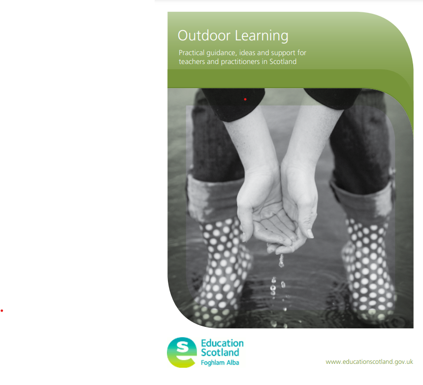 | The purpose of this resource is to provide practical, accessible and straightforward advice for teachers, childhood practitioners, youth workers and others working with children and young people on how to engage children and young people with learning outdoors. It is part of achieving a wider objective of supporting the implementation of the guidance document Curriculum for Excellence through Outdoor Learning.
This resource introduces practitioners who are not familiar with outdoor learning to exploring ways of taking children outside. It provides a route into continuing professional development and suggestions for embedding outdoor learning as a whole-school approach. It serves to illustrate the potential of outdoor learning as an effective approach to learning and teaching within the context of Curriculum for Excellence.
PDF Link: https://education.gov.scot/improvement/Documents/hwb24-ol-support.pdf |
Curriculum for Excellence Through Outdoor Learning | Learning and Teaching Scotland | 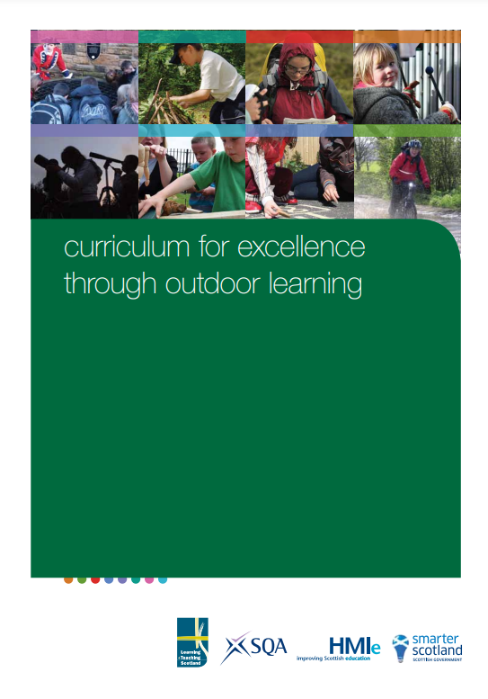 | This document outlines the integral role outdoor learning has in the new curriculum. It signposts ways for teachers, educators and their partners to plan for and use the outdoor environment to provide imaginative learning and teaching which is relevant, lively and motivating. All staff at every level of involvement with the education of children and young people have a responsibility to make the most of the outdoor environment to support the delivery of the experiences and outcomes of Curriculum for Excellence.
Developments in outdoor learning are underpinned and supported through Glow and by the Learning and Teaching Scotland outdoor learning online resource, which was initially developed in partnership with Scottish Natural Heritage, Forestry Commission Scotland and the Scottish Advisory Panel for Outdoor Education. The online resource provides support for all those involved in outdoor learning and provides detail on issues such as planning experiences and selecting locations. The online PDF version of this document has embedded links to sections of further guidance available at the online resource.
PDF Link: https://education.gov.scot/Documents/cfe-through-outdoor-learning.pdf
|
Advancing Outdoor Play and Early Childhood Education: A Discussion Paper | Lawson Foundation | 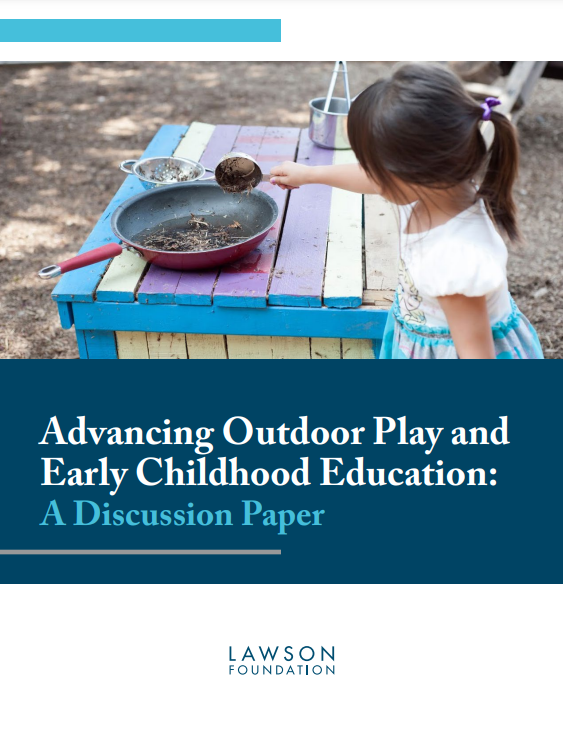 | Outdoor play as a means of fostering healthy child development and high-quality early learning experiences is attracting increasing attention. Implementation efforts in early childhood education programs are on the rise despite a number of barriers to progress. Post-secondary education and training do not tend to prepare early childhood educators for outdoor play. While professional development is emerging to fill the gap, demand is increasing quickly: multiple sectors require various levels of education and training to support early childhood education, particularly in regards to understanding and managing risk. At the same time, early childhood education policies and practices governing children’s outdoor play are not well developed, resulting in gaps and barriers to outdoor play. Given the critical importance of both early childhood education and outdoor play to healthy child development, it is imperative that multiple sectors work together to reduce barriers and increase opportunities for outdoor play in early childhood education programs. In October 2018, the Lawson Foundation convened leaders from multiple sectors at the Outdoor Play and Early Learning Policy Research Symposium at the Kingbridge Centre, King City, Ontario, to explore how to advance outdoor play and early childhood education across policy, practice, and research. This discussion paper summarizes the six major themes that emerged from the Symposium presentations and discussions.
PDF Link: https://lawson.ca/advancing-op-ece.pdf |
Nature Play & Learning Spaces: Creating and Managing Places Where Children Engage with Nature | Robin C. Moore | 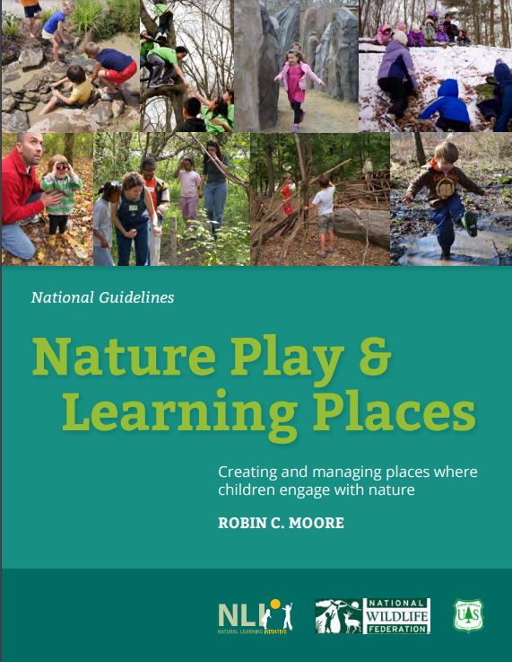 | Nature Play & Learning Places: Creating and managing places where children engage with nature offers a set of guidelines for those who create, manage or promote development of nature areas in the everyday environments of children, youth, and families, especially in urban/suburban communities. The goal is to attract kids and families outdoors to interact directly with nature.
PDF Link: http://outdoorplaybook.ca/wp-content/uploads/2015/09/Nature-Play-Learning-Places_v1.5_Jan16.pdf
|
Urban Nature and Childhoods | Iris Duhn, Karen Malone, Mark Tesar | 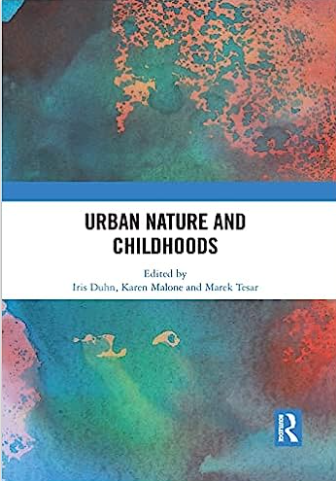 | This book challenges the notion that nature is a city’s opposite and addresses the often-overlooked concept of urban nature and how it relates to children’s experiences of environmental education. The idea of nature-deficit, as well as concerns that children in cities lack for experiences of nature, speaks to the anxieties that underpin urban living and a lack of natural experiences. The contributors to this volume provide insights into a more complex understanding of urban nature and of children’s experiences of urban nature. What is learned if nature is not somewhere else but right here, wherever we are? What does it mean for children’s environmental learning if nature is a relationship and not an entity? How can such a relational understanding of urban nature and childhood support more sustainable and more inclusive urban living? In raising challenging questions about childhoods and urban nature, this book will stimulate much needed discussion to provoke new imaginings for researchers in environmental education, childhood studies, and urban studies. This book was originally published as a special issue of Environmental Education Research. |
Talking Their Way Into Science: Hearing Children’s Questions and Theories, Responding with Curriculum | Karen Gallas | 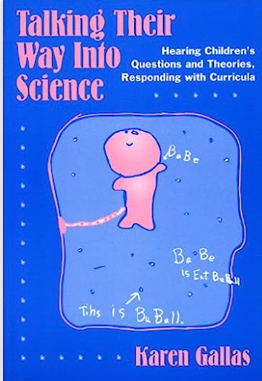 | Karen Gallas provides us with a window into children's thinking about the world, enabling us to see how students build complex theories, identify important questions, and begin to enter the world of science, all within the naturalistic setting of the classroom. As the title suggests, this book treats classroom science as a particular type of discourse, with its own set of language and thinking practices. Gallas describes the content, structure, and practice of her child-centered approach, explains how the teacher's role in Science Talks develops and changes over time, and discusses how the use of Science Talks could transform science instruction as a whole. The full transcripts of two such talks included in the appendix, in addition to many smaller quoted interchanges throughout the text, will fascinate readers. |
Reconfiguring the Natures of Childhood | Affrica Taylor | 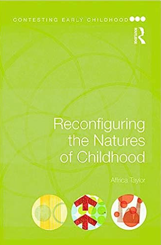 | In this fascinating new book, Affrica Taylor encourages an exciting paradigmatic shift in the ways in which childhood and nature are conceived and pedagogically deployed, and invites readers to critically reassess the naturalist childhood discourses that are rife within popular culture and early years education. Through adopting a common worlds framework, Reconfiguring the Natures of Childhood generates a number of complex and inclusive ways of seeing and representing the early years. It recasts childhood as: - messy and implicated rather than pure and innocent;
- situated and differentiated rather than decontextualized and universal;
- entangled within real world relations rather than protected in a separate space.
Throughout the book, the author follows an intelligent and innovative line of thought which challenges many pre-existing ideas about childhood. Drawing upon cross-disciplinary perspectives, and with international relevance, this book makes an important contribution to the field of childhood studies and early childhood education, and will be a valuable resource for scholars, postgraduate students and higher education teachers. |
The Great Outdoor: Restoring Children’s Right to Play Outside | Mary S. Rivkin | 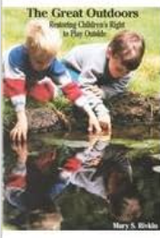 | For many school-age children, outdoor experiences are very limited. The author compellingly argues for ensuring that children have outdoor play and learning opportunities, describes exciting playgrounds in the U.S. and other countries, and provides practical information on safety, accessibility, and curriculum. |
Risk and Our Pedagogical Relation to Children: On the Playground and Beyond | Stephen J. Smith | 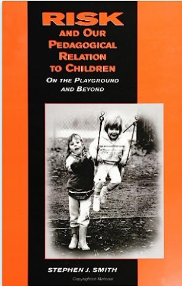 | In this thoughtful book, Stephen Smith shows how parents and educators can become aware of the positive value of risk in children's lives and how they can be challenged to take risks that are worth their while. This text is a how so much more than a how to book. It shows by evocative example and provocative questions how adults can help children mature with confidence and a strong sense of physical competence.
The analysis shows the place, silence, atmosphere, challenge, encounter, practice and possibility of risk-taking. It consistently and conscientiously draws attention to a careful, solicitous manner of being with children. |
Politics in the Playground: The World of Early Childhood in Postwar New Zealand | Helen May | 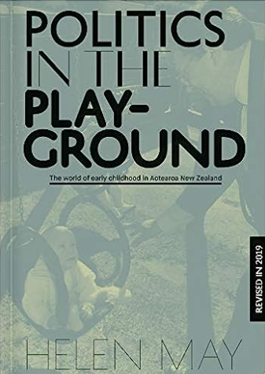 *Cover may vary | The book follows on from Discovery of Early Childhood (1997, 2013), which traced the origins of institutional care and education for young children in Europe, US, and New Zealand prior to state interest and serious investment. This latest edition brings the story right up to date with developments under the Labour coalition government of Jacinda Ardern. The postwar search for security, the radicalism of the 1960s and 1970s, the rise of feminism, the role of the state in social issues, increasing employment of women—all have had an impact on early childhood education. This is an account of critical issues for young children that will interest parents, policy- makers, teachers, and students. |
Snails Live in Houses Too: Environmental Education for the Early Years | Sue Elliot, Susan Emmett | 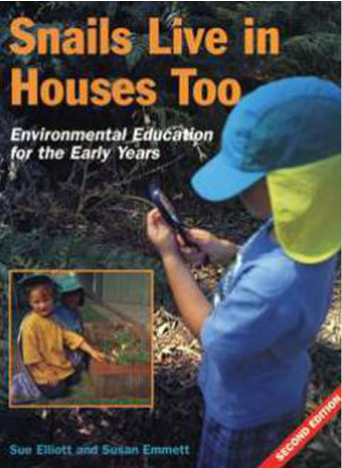 | In this helpful book, the authors interpret Environmental Education in terms of appropriate goals, teaching strategies and experiences relevant to he developmental level of young children. They also demonstrate how Environmental Education can be integrated into all aspects of an early childhood program in a range of settings including day care centers, kindergartens and lower primary groups. The text includes a chapter on strategies for fostering positive characteristics and behaviours, which sets out goals such as the achievement of high self-esteem, self-motivation, respect for the rights of others, conflict resolution, and strategies to help achieve these in the context of Environmental Education. A large section on play materials and equipment follows, which lists and explains the variety and many uses of art, sensory and manipulative materials, dramatic play, gross motor experiences and books. An extensive resources section comprises the last chapter of this practical and timely book. |
Lens on Outdoor Learning | Wendy Banning, Ginny Sullivan | 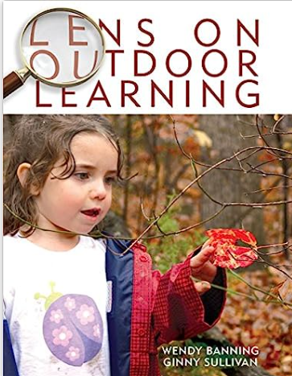 | The outdoors is full of rich learning experiences for preschool and pre-kindergarten children. Lens on Outdoor Learning is filled with stories and colorful photographs that illustrate how the outdoors supports children's early learning. Each story is connected to an early learning standard such as curiosity and initiative; engagement and persistence; imagination, invention, and creativity; reasoning and problem-solving; risk-taking, responsibility, and confidence; reflection, application, and interpretation; and flexibility and resilience. Much of the teaching in these experiences is indirect and involves provisioning, observing, and conversing with children as they spend quality time in nature. Children's dialogue and actions are included in each story to show just how engaged they became during these experiences. Lens on Outdoor Learning will inspire early childhood professionals to use this outdoor approach in their own setting. |
Science & Children | National Science Teachers Association | 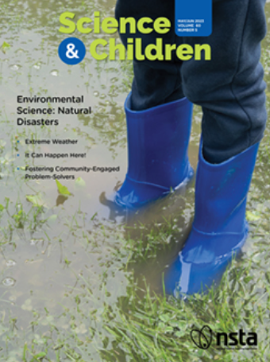 *Cover is from the May/June 2023 Issue and will change depending on the issue you are reading | NSTA publishes four grade-range-specific journals (Science & Children, Science Scope, The Science Teacher, and Journal of College Science Teaching), as well as Connected Science Learning, which bridges in-school and out-of-school science teaching and learning.
This resource offers a digital view of the current issue that can be found from the link provided below.
Link: https://www.nsta.org/science-and-children |
Primary Science | The Association for Science Education | 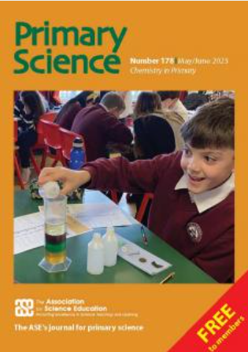 *Cover is from the May/ 2023 Issue and will change depending on the issue you are reading | Primary Science (PS) is a themed journal for all those involved in primary science education for children aged 3-12, including primary teachers, primary science coordinators, primary schools, local authority advisers and inspectors and science teacher trainers and trainees. It is a forum for sharing information and ideas and includes articles about teaching, learning and assessing science. PS aims to spread good practice in primary science teaching and to help practitioners improve their background science knowledge and understanding and to keep up to date with curriculum developments and new resources. It provides an independent national and international perspective on primary science education. |
Held by the Land: A Guide to Indigenous Plants for Wellness | Leigh Joseph | 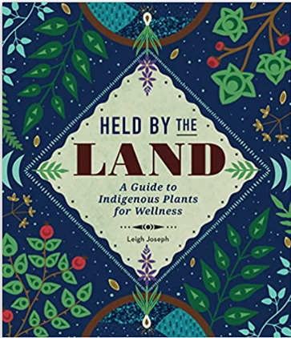 | Author Leigh Joseph, an ethnobotanist and a member of the Squamish Nation, provides a beautifully illustrated essential introduction to Indigenous plant knowledge.
Plants can be a great source of healing as well as nourishment, and the practice of growing and harvesting from trees, flowering herbs, and other plants is a powerful way to become more connected to the land. The Indigenous Peoples of North America have long traditions of using native plants as medicine as well as for food. Held by the Land honors and shares some of these traditions, offering a guide to: - Harvesting herbs and other plants and using them topically
- North American plants that can treat common ailments, add nutrition to your diet, become part of your beauty regime, and more
- Stories and traditions about native plants from the author's Squamish culture
- Using plant knowledge to strengthen your connection to the land you live on
Early chapters will introduce you to responsible ways to identify and harvest plants in your area and teach you how to grow a deeper connection with the land you live on through plants. In the plant profiles section, common plants are introduced with illustrations and information on their characteristics, range, how to grow and/or harvest them, and how to use them topically and as food. Special features offer recipes for food and beauty products along with stories and traditions around the plants.
|
Eating Wild in Eastern Canada: A Guide to Foraging the Forests, Fields, Shorelines | Jamie Simpson | 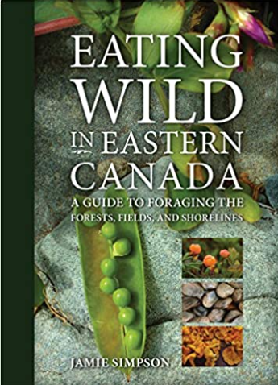 | From fiddleheads to spruce tips, wild food can be adventurous and fun--with the right guide. In Eating Wild in Eastern Canada, award-winning author and conservationist Jamie Simpson (Journeys through Eastern Old-Growth Forests) shows readers what to look for in the wilds and how and when to collect it. Grouping foods by their most likely foraging locations—forests, fields, and shorelines—and with 50 full-colour photographs, identification is made accessible for the amateur hiker, wilderness enthusiast, and foodie alike. Includes historical notes and recipes, cautionary notes on foraged foods' potential dangers, and interviews with wild-edible gatherers and chefs. While gathering wild edibles may be instinctive to some, there is an art to digging for soft-shelled clams and picking highbush cranberries, and Simpson joyfully explores it in this one-of-a-kind narrative guidebook. |
Outdoor Play and Learning (OPAL) in School Communities | Raktim Mitra, Chrissy Pelopidas, Farzana Propa, Patrick Duran Yutiga | 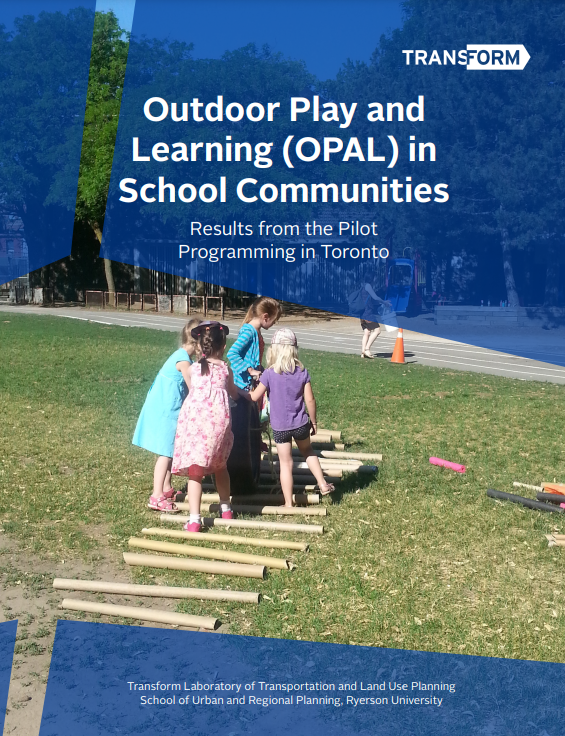 | Outdoor Play and Learning (OPAL) is a play provision training program by EcoKids (formerly Earth Day Canada) that is designed to protect a child’s right to play, particularly at elementary schools. The programming was influenced by the U.K.-based school improvement program of the same name (www.outdoorplayandlearning.co.uk). OPAL aims to transform attitudes to play provision, supervision, and risk management in Canadian schools. It encourages schools to use loose parts to enrich and diversify the play offering. Between 2016 and 2018, EcoKids worked closely with six school communities in the Toronto District School Board (TDSB) to implement an OPAL pilot programming in Ontario. The programming later expanded to 40 more public elementary schools in the Toronto region. This research evaluates the OPAL pilot project (i.e., the programming at six pilot schools) using a mixed-methods approach, which includes baseline and follow-up surveys (multiple cross-sections) of children attending grades 4-6, and post-implementation interviews of OPAL Champions (i.e., teachers and staff). The goals of this evaluation research are to (1) improve understanding of the benefits of such programming in enhancing children’s play outcome and wellbeing, and (2) provide insights that would improve larger-scale program delivery at other Canadian school communities PDF Link: https://transformlab.torontomu.ca/wp-content/uploads/2020/06/OPAL-Report-Final-2020-Revised2.pdf |
Book Title | Author & Illustrator | Book Cover | Description |
Up in the Garden and Down in the Dirt | Kate Messner, Christopher Silas Neal | 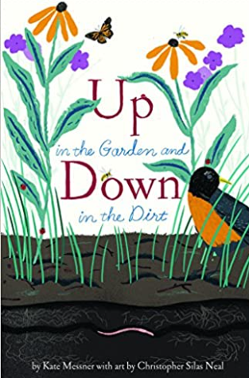 | Explore the secret realm beneath the dirt that brings the world of nature to life: Follow a young girl and her grandmother on a journey through the year planning, planting, and harvesting their garden—and learn about what's happening in the dirt to help make it all happen.
Up in the garden, the world is full of green—leaves and sprouts, growing vegetables, ripening fruit. But down in the dirt exists a busy world—earthworms dig, snakes hunt, skunks burrow—populated by all the creatures that make a garden their home. |
Over and Under the Snow | Kate Messner, Christopher Silas Neal | 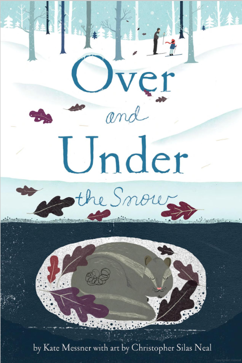 | Over the snow, the world is hushed and white. But under the snow exists a secret kingdom of squirrels and snow hares, bears and bullfrogs, and many other animals that live through the winter safe and warm, awake and busy, under the snow. Discover the wonder and activity that lies beneath winter's snowy landscape in this magical book. |
Over and Under the Waves | Kate Messner, Christopher Silas Neal | 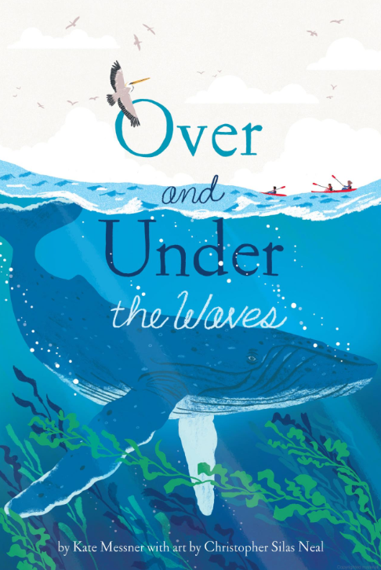 | Over the waves, the sea lions bark and seagulls wheel and call. The bay is smooth and bright in the sun. But under the waves, there's a whole hidden forest, full of whales and wolf eels, sardines and sea bass, leopard sharks and luminous jellies, as well as the waving kelp that shelters them all. Discover the magical depths of the kelp forest, and all the fascinating creatures living just a paddle's length away—over and under the waves. |
Over and Under the Rainforest | Kate Messner, Christopher Silas Neal | 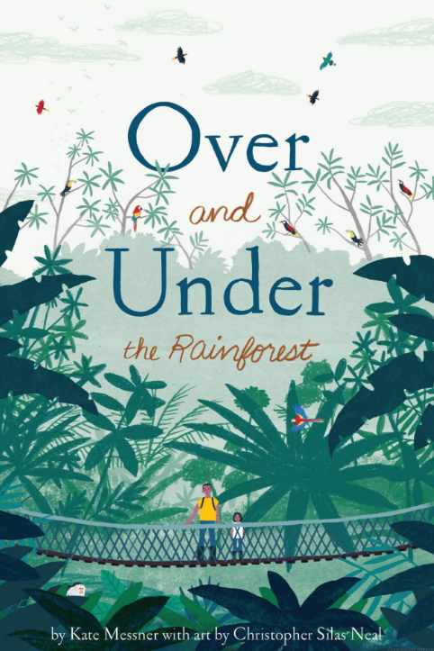 | Award-winning duo Kate Messner and Christopher Silas Neal take readers on a thrilling tour of one of the most diverse ecosystems on planet earth: the rainforests of Central America.
Discover the wonder that lies hidden among the roots, above the winding rivers, and under the emerald leaves of the rainforest. |
Over and Under the Pond | Kate Messner, Christopher Silas Neal | 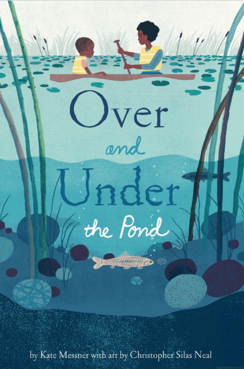 | In this gorgeous companion to the acclaimed Over and Under the Snow and Up in the Garden and Down in the Dirt, Kate Messner and Christopher Silas Neal bring to life a secret underwater world. In this book, readers will discover the plants and animals that make up the rich, interconnected ecosystem of a mountain pond. Over the pond, the water is a mirror, reflecting the sky. But under the pond is a hidden world of minnows darting, beavers diving, tadpoles growing. These and many other secrets are waiting to be discovered...over and under the pond. |
Over and Under the Canyon | Kate Messner, Christopher Silas Neal | 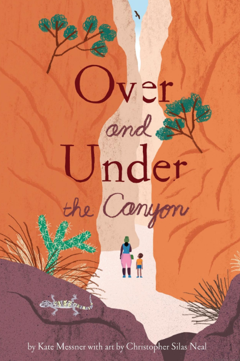 | Over and Under the Canyon takes young readers on a thrilling tour of a desert canyon ecosystem. Over the canyon, the sun scalds the air, baking desert mud to stone. But under the shade of the cliffs hides another world, where bighorn sheep bound from rock to rock on the hillside, roadrunners make their nests in sturdy cacti, and banded geckos tuck themselves into the shelter of the sand. Discover the wonders concealed in the curves of the canyon, the magic of a desert wildflower bloom, and all the unexpected creatures that bring the desert to life. |
A Seed is Sleepy | Dianna Aston, Sylvia Long | 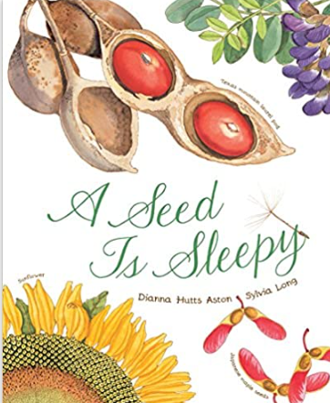 | Part of the incredible six-book Nature Books series from artist Sylvia Long and author Dianna Hutts Aston, A Seed is Sleepy introduces children to a fascinating array of seed and plant facts.
Turn each page to explore the amazing world of these garden wonders through watercolor illustrations that bring to life nature landscapes filled with seeds, flowers, plants, leaves, and trees. |
A Butterfly is Patient | Dianna Hutts Aston, Sylvia Long | 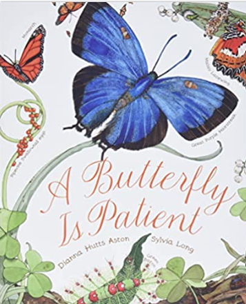 | Part of the incredible six-book Nature Books series from the award-winning duo of Dianna Hutts Aston and Sylvia Long, A Butterfly Is Patient celebrates a dazzling variety of butterflies in all their beauty and wonder.
Turn each page to explore the amazing world of these beautiful winged insects through watercolor illustrations that bring to life garden landscapes filled with flowers, vines, leaves, and sunshine. |
A Nest is Noisy | Dianna Hutts Aston, Sylvia Long | 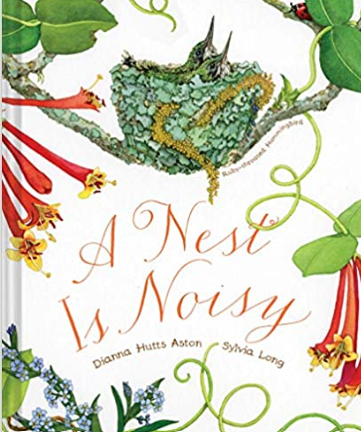 | "Fans will rejoice at the first sight of A Nest Is Noisy," promises School Library Journal, and they're right. From the award-winning creators of An Egg Is Quiet, A Seed Is Sleepy, A Butterfly Is Patient, A Rock Is Lively, and A Beetle Is Shy comes this gorgeous and informative look at the fascinating world of nests, from those of tiny bee hummingbirds to those of orangutans high in the rainforest canopy. Poetic in voice and elegant in design, this carefully researched book introduces children to a captivating array of nest facts and will spark the imaginations of children whether in a classroom reading circle or on a parent's lap. |
An Egg is Quiet | Dianna Hutts Aston, Sylvia Long | 
| This stunningly beautiful and wonderfully informative book from award-winning artist Sylvia Long and author Dianna Hutts Aston makes for a fascinating introduction to the vast and amazing world of eggs. Featuring poetic text and an elegant design, this acclaimed book teaches children countless interesting facts about eggs. Full of wit and charm, An Egg Is Quiet will at once spark the imagination and cultivate a love of science. |
A Rock is Lively | Dianna Hutts Aston, Sylvia Long | 
| From the creators of the award-winning An Egg Is Quiet, A Seed Is Sleepy, A Butterfly Is Patient, and A Nest Is Noisy comes this gorgeous and informative introduction to the fascinating world of rocks. From dazzling blue Lapis Lazuli to volcanic Snowflake Obsidian, an incredible variety of rocks are showcased in all their splendor. Poetic in voice and elegant in design, this book introduces an array of facts, making it equally perfect for classroom sharing and family reading. |
A Beetle is Shy | Dianna Hutts Aston, Sylvia Long | 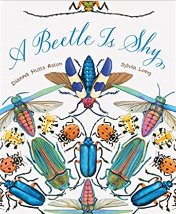 | From the acclaimed duo Dianna Hutts Aston and Sylvia Long, creators of An Egg Is Quiet, A Seed Is Sleepy, and A Rock Is Lively, this beautiful paperback edition of A Beetle Is Shy is here to open a world of wonders to a new audience of young readers. From flea beetles to bombardier beetles, an incredible variety of these beloved bugs are showcased here in all their splendor. |
A Shell is Cozy | Dianna Hutts Aston, Sylvia Long | 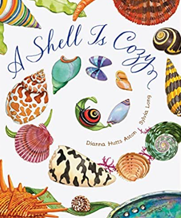 | The newest entry in the bestselling Nature Books series by Dianna Hutts Aston and Sylvia Long, A Shell Is Cozy takes a gorgeous look at the fascinating world of shells. From land snails to sea scallops, giant clams to tiny dwarf shells, an incredible array of shells are showcased in all their splendor. |
Worm Weather | Jean Taft, Matt Hunt | 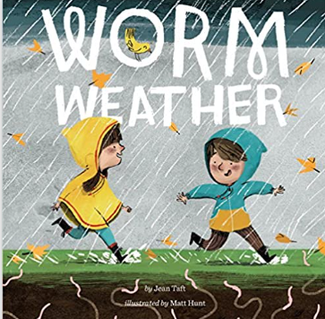 | Join in the rainy-day fun, as kids splash through the puddles, affecting another weather enthusiast, a nearby worm. An imaginative and playful story, readers will love seeing the worm delight in the weather just as much as the kids. |
Goodbye Winter, Hello Spring | Kenard Pak | 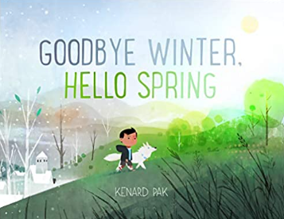 | As days stretch longer, animals creep out from their warm dens, and green begins to grow again, everyone knows―spring is on its way!
Join a boy and his dog as they explore nature and take a stroll through the countryside, greeting all the signs of the coming season. In a series of conversations with everything from the melting brook to chirping birds, they say goodbye to winter and welcome the lushness of spring. |
Goodbye Summer, Hello Autumn | Kenard Pak | 
| As trees sway in the cool breeze, blue jays head south, and leaves change their colors, everyone knows--autumn is on its way! Join a young girl as she takes a walk through forest and town, greeting all the signs of the coming season. In a series of conversations with every flower and creature and gust of wind, she says good-bye to summer and welcomes autumn. |
Goodbye Autumn, Hello Winter | Kenard Pak |
| As leaves fall from their trees, animals huddle against the cold, and frost creeps across windows, everyone knows―winter is on its way!
Join a brother and sister as they explore nature and take a stroll through their twinkling town, greeting all the signs of the coming season. In a series of conversations with everything from the setting sun to curious deer, they say goodbye to autumn and welcome the glorious first snow of winter in Kenar Pak's Goodbye Autumn, Hello Winter. |
The Honeybee | Kirsten Hall, Isabelle Arsenault |
| Buzz from flower to flower with a sweet honeybee in this timely, clever, and breathtakingly gorgeous picture book from critically acclaimed author Kirsten Hall and award-winning illustrator Isabelle Arsenault. |
The Wonder of Thunder | Sharon Purtill, Tamara Piper | 
| Do you know a child who is scared or feels uneasy during thunderstorms? The Wonder of Thunder is a lighthearted children’s rhyming picture book that helps tame fears while highlighting all the wondrous things thunderstorms can do. Children will adore Sally Storm, a lovable character who excitedly shares all the good she can do as she swirls and tumbles overhead. This early learning picture book introduces the topic of storms, thunder, lightning and rain in a fun and non-threatening way. |
The Hidden Rainbow | Christie Matheson |
| One little bee peeks out on a world of gray and snow.
She’s looking for bright colors and needs you to help them grow. Bees need a healthy and colorful garden to survive. Luckily, all the colors of the rainbow are hidden in this garden—but the bees need the reader’s help to find them. Brush off the camellia tree, tickle the tulips, and even blow a kiss to the lilac tree. With every action and turn of the page, a flower blooms and more bees are drawn to the feast.
|
Some Bugs | Angela DiTerlizzi, Brendan Wenzel |
| Grab your magnifying glass! Find your field guide! And come hop, hide, swim, and glide through this buggy backyard world!
Featuring insects including butterflies and moths, crickets and cicadas, bumblebees and beetles, this zippy rhyming exploration of backyard-bug behavior is sure to have insect enthusiasts of all ages bugging out with excitement! |
Outside In | Deborah Underwood, Cindy Derby |
| Outside is waiting, the most patient playmate of all. The most generous friend. The most miraculous inventor. This thought-provoking picture book poetically underscores our powerful and enduring connection with nature, not so easily obscured by lives spent indoors. Rhythmic, powerful language shows us how our world is made and the many ways Outside comes in to help and heal us, and reminds us that we are all part of a much greater universe. Emotive illustrations evoke the beauty, simplicity, and wonder that await us all . . . outside. |
Finding Wild | Megan Wagner Lloyd, Abigail Halpin |
| There are so many places that wild can exist, if only you know where to look! Can you find it? Two kids set off on an adventure away from their urban home and discover all the beauty of the natural world. From the bark on the trees to the sudden storm that moves across the sky to fire and flowers, and snowflakes and fresh fruit. As the children make their way through the woods and back to the paved and noisy streets, they discover that wild exists not just off in some distant place, but right in their own backyard. |
The Hike | Alison Farrell |
| Three intrepid young female explorers set out to conquer the outdoors in their local forest, enjoying the process in their own different ways. Wren brings a sketchbook and a flag, El brings a poetry notebook, and Hattie brings feathers (and holds Bean the dog’s leash). They get lost and use maps to find their way. They draw wildlife, spot deer tracks, and see a deer before it startles and disappears, all before they finally and joyfully reach their destination. |
Wonder Walkers | Micha Archer | 
*Cover may vary | When two curious kids embark on a "wonder walk," they let their imaginations soar as they look at the world in a whole new light. They have thought-provoking questions for everything they see: Is the sun the world's light bulb? Is dirt the world's skin? Are rivers the earth's veins? Is the wind the world breathing? I wonder . . . Young readers will wonder too, as they ponder these gorgeous pages and make all kinds of new connections. What a wonderful world indeed! |
A Walk in the Forest | Maria Dek | 
| A charming, illustrated picture book that invites young readers to discover the woods as a place for both imaginative play and contemplation.
The forest comes alive in all its mysterious glory with Maria Dek's charming watercolor images and poetic text in A Walk in the Forest. With the turn of each serenely illustrated page, young readers will follow along to collect pinecones, feathers, or stones; follow the tracks of a deer; or listen to the chirping of birds and the whisper of trees. Build a shelter and play hide-and-seek. Pretend the woods are a jungle or shout out loud to stir up the birds. |
We Are Water Protectors | Carole Lindstrom, Michaela Goade | 
| Water is the first medicine. It affects and connects us all . . .
When a black snake threatens to destroy the Earth And poison her people’s water, one young water protector Takes a stand to defend Earth’s most sacred resource. |
Stand Like A Cedar | Nicola I. Campbell, Carrielynn Victor | 
| When you go for a walk in nature, who do you see? What do you hear? Award-winning storyteller Nicola I. Campbell shows what it means to "stand like a cedar" on this beautiful journey of discovery through the wilderness. Learn the names of animals in the Nłeʔkepmxcín or Halq'emeylem languages as well as the teachings they have for us. Experience a celebration of sustainability and connection to the land through lyrical storytelling and Carrielynn Victor's breathtaking art in this children's illustrated book. Discover new sights and sounds with every read. A glossary and pronunciation guide can be found at the back of the book. |
Be A Good Ancestor | Leona Prince, Gabrielle Prince, Carla Joseph |
| Rooted in Indigenous teachings, this stunning picture book encourages readers of all ages to consider the ways in which they live in connection to the world around them and to think deeply about their behaviors. Addressing environmental issues, animal welfare, self-esteem and self-respect, and the importance of community, the authors deliver a poignant and universal message in an accessible way: Be a good ancestor to the world around you. Thought-provoking stanzas offer a call to action for each one of us to consider how we affect future generations. Every decision we make ripples out, and we can affect the world around us by thinking deeply about those decisions. |
Walking Together | Elder Dr. Albert D. Marshall, Lousie Zimanyi, Emily Kewageshig |
| This innovative picture book introduces readers to the concept of Etuaptmumk—or Two-Eyed Seeing, the gift of multiple perspectives in the Mi’kmaw language—as we follow a group of young children connecting to nature as their teacher. A poetic, joyful celebration of the Lands and Waters as spring unfolds: we watch for Robin's return, listen for Frog's croaking, and wonder at maple tree's gift of sap. Grounded in Etuaptmumk, also known as Two-Eyed Seeing—which braids together the strengths of Indigenous and non-Indigenous ways of knowing—and the Mi’kmaq concept of Netukulimk—meaning to protect Mother Earth for the ancestors, present, and future generations—Walking Together nurtures respectful, reciprocal, responsible relationships with the Land and Water, plant-life, animals and other-than-human beings for the benefit of all. |
Ten Ways to Hear Snow | Cathy Camper, Kenard Pak |
| One winter morning, Lina wakes up to silence. It's the sound of snow -- the kind that looks soft and glows bright in the winter sun. But as she walks to her grandmother's house to help make the family recipe for warak enab, she continues to listen.
As Lina walks past snowmen and across icy sidewalks, she discovers ten ways to pay attention to what might have otherwise gone unnoticed. With stunning illustrations by Kenard Pak and thoughtful representation of a modern Arab American family from Cathy Camper, Ten Ways to Hear Snow is a layered exploration of mindfulness, empathy, and what we realize when the world gets quiet. |
Berry Song | Michaela Goade |
| On an island at the edge of a wide, wild sea, a girl and her grandmother gather gifts from the earth. Salmon from the stream, herring eggs from the ocean, and in the forest, a world of berries. Salmonberry, Cloudberry, Blueberry, Nagoonberry. Huckleberry, Snowberry, Strawberry, Crowberry. Through the seasons, they sing to the land as the land sings to them. Brimming with joy and gratitude, in every step of their journey, they forge a deeper kinship with both the earth and the generations that came before, joining in the song that connects us all. Michaela Goade's luminous rendering of water and forest, berries and jams glows with her love of the land and offers an invitation to readers to deepen their own relationship with the earth. |
Winter Sleep: A Hibernation Story | Sean Taylor, Alex Morss, Cinyee Chiu |
| In this cozy bedtime story, follow a child and his grandma through a winter landscape to explore how the Earth goes to sleep for winter.
Spot the sleeping animals as the tale unfolds, then learn about their hibernation habits from the information pages at the end. |
Carson Crosses Canada | Linda Bailey, Kass Reich | 
| Feisty Annie Magruder and her dog, Carson, live in British Columbia, Canada, and they're setting out to visit her sister, Elsie, in Newfoundland. In their little rattlebang car, packed with Carson's favorite toy, Squeaky Chicken, and plenty of baloney sandwiches, Annie and Carson hit the road! They travel province by province, taking in each unique landscape and experiencing something special to that particular part of this vast, grand country. For example, they marvel at the beauty of the big, open sky -- and grasshoppers! -- in Saskatchewan and discover the gorgeous red earth and delicious lobster rolls in PEI, before finally being greeted by Elsie -- and a surprise for Carson! |
The Snowy Day | Ezra Jack Keats | 
| The Snowy Day, a 1963 Caldecott Medal winner, is the simple tale of a boy waking up to discover that snow has fallen during the night. Keats's illustrations, using cut-outs, watercolors, and collage, are strikingly beautiful in their understated color and composition. |
Wiggling Worms at Work | Wendy Pfeffer, Steve Jenkins |
| Crawling through the dirt, worms are hard at work. Worms help the fruit and vegetables we eat by loosening the soil and feeding the plants. Read and find out about these wiggling wonders! This clear and appealing science book for early elementary age kids, both at home and in the classroom, lets readers know about all the important ways worms work to help the environment—and people. It contains a find out-more-section with fun activities.
|
A Log’s Life | Wendy Pfeffer, Robin Brickman | 
| One stormy day a strong wind rages through the forest, causing an old oak tree to bend and sway. Lightning strikes; the tree crashes to the ground. Now it’s a giant log.
In this fascinating book, author Wendy Pfeffer and illustrator Robin Brickman introduce readers to they life cycle of a tree. The informative, lyrical text is complemented by stunning, three-dimensional paper sculptures that showcase the forest ecosystem, inspiring readers to take a close look at the trees—and logs—in their own backyards. |
The Longest Day | Wendy Pfeffer, Linda Bleck |
| In this fourth and final book in the series about seasons, Wendy Pfeffer turns her attention to summer, when butterflies emerge from silky cocoons and daylight hours stretch longer and longer. With lyrical prose and vibrant illustrations, The Longest Day takes us on a journey through the history and science behind the summer solstice, with a focus on summer celebrations from various cultures around the world. Teachers and students alike will treasure the varied and accessible knowledge, and activities in the back let everyone in on the festivities. |
The Shortest Day | Wendy Pfeffer, Jesse Reisch |
| The beginning of winter is marked by the solstice, the shortest day of the year. Long ago, people grew afraid when each day had fewer hours of sunshine than the day before. Over time, they realized that one day each year the sun started moving toward them again. In lyrical prose and cozy illustrations, this book explains what the winter solstice is and how it has been observed by various cultures throughout history. Many contemporary holiday traditions were borrowed from ancient solstice celebrations. Simple science activities, ideas for celebrating the day in school and at home, and a further-reading list are included. |
Sweetgrass | Theresa Meuse, Jessica Jerome |
| A modern story of traditional Indigenous knowledge that follows a young boy and his Auntie as they gather and braid sweetgrass, one of the four sacred medicines. It's early July, and for Matthew and his Auntie that means one thing: time to go sweetgrass picking. This year, Matthew's younger cousin Warren is coming along, and it will be his first time visiting the shoreline where the sweetgrass grows. With Auntie's traditional Mi'kmaw knowledge and Matthew's gentle guidance, Warren learns about the many uses for sweetgrass—as traditional medicine, a sacred offering, a smudging ingredient—and the importance of not picking more than he needs. Once the trio is back at Auntie's house, she shows the boys how to clean and braid the grass.
From the duo behind the bestsellers The Gathering and The Sharing Circle, this heartfelt story about the gifts we receive from Mother Earth and how to gather them respectfully offers thoughtful insight into a treasured Mi'kmaw tradition. |
The Eagle Feather | Kevin Locke, Allison Parker, Jessika Von Innerebner | 
| When we look up to the sky and see a beautiful eagle soaring by, we may stop to appreciate its graceful sight, but, as Kevin Locke explains, eagles also have powerful teachings to offer. In this book Kevin shares with us that each feather on the eagle's wing represents a virtue that we can all learn from. Suggested for Ages 4-6 |
Turtle Island: The Story of North America’s First People | Eldon Yellowhorn,, Kathy Lowinger | 
| Unlike most books that chronicle the history of Native peoples beginning with the arrival of Europeans in 1492, this book goes back to the Ice Age to give young readers a glimpse of what life was like pre-contact. The title, Turtle Island, refers to a Native story that explains how North and Central America were formed on the back of a turtle. Based on archeological finds and scientific research, we now have a clearer picture of how the Indigenous people lived. Using that knowledge, the authors take the reader back as far as 14,000 years ago to imagine moments in time. A wide variety of topics are featured, from the animals that came and disappeared over time, to what people ate, how they expressed themselves through art, and how they adapted to their surroundings. The importance of story-telling among the Native peoples is always present to shed light on how they explained their world. The end of the book takes us to modern times when the story of the Native peoples is both tragic and hopeful. |
Slow Down: 50 Mindful Moments in Nature | Rachel Williams, Freya Hartas | 
| Slow down to watch 50 nature stories that command calm and foster mindfulness
All around us, nature is working wonders. Every day, hour by hour, magical transformations happen right in front of you. But it’s not always easy to see them…In this beautiful illustrated collection, 50 moments in nature are paused for you to watch them in detail. Then you should go outside, and explore, and see what you find when you take the time to slow down. Gorgeously illustrated, this charming collection celebrates the small wonders happening all around us every day. |
Bear Island | Matthew Cordell |
| Louise and her family are sad over the loss of their beloved dog, Charlie. "Life will not be the same," Louise says, as she visits a little island that Charlie loved.
But on a visit to the island after Charlie's death, something strange happens: She meets a bear. At first, she's afraid, but soon she realizes that the bear is sad, too. As Louise visits more often, she realizes that getting over loss takes time. And just when she starts to feel better, it's time for Bear to bed down for the winter.
Once again, Louise believes that life will not be the same. But sometimes, things can change for the better, and on the first warm day of spring, her family welcomes a new member. Here is a lovely, poignant story about loss and healing that will bring comfort to even the youngest readers. |
Watercress | Andrea Wang, Jason Chin | 
| While driving through Ohio in an old Pontiac, a young girl's Chinese immigrant parents spot watercress growing wild in a ditch by the side of the road. They stop the car, grabbing rusty scissors and an old paper bag, and the whole family wades into the mud to gather as much as they can.
At first, she's embarrassed. Why can't her family just get food from the grocery store, like everyone else? But when her mother shares a bittersweet story of her family history in China, the girl learns to appreciate the fresh food they foraged—and the memories left behind in pursuit of a new life.
Together, they make a new memory of watercress. |
The Snail with the Right Heart: A True Story | Maria Popova, Ping Zhu | 
| This boldly illustrated book about evolution for children features a large gatefold that opens up to immerse readers in the story and will help kids understand that nature is all about differentiation and that being different is beautiful. |
Sidewalk Flowers | JoArno Lawson, Sydney Smith |
| In this wordless picture book, a little girl collects wildflowers while her distracted father pays her little attention. Each flower becomes a gift, and whether the gift is noticed or ignored, both giver and recipient are transformed by their encounter. |
Town is by the Sea | Joanne Schwartz, Sydney Smith | 
| A young boy wakes up to the sound of the sea, visits his grandfather’s grave after lunch and comes home to a simple family dinner with his family, but all the while his mind strays to his father digging for coal deep down under the sea. Stunning illustrations by Sydney Smith, the award-winning illustrator of Sidewalk Flowers, show the striking contrast between a sparkling seaside day and the darkness underground where the miners dig. |
Small Wonders: Jean-Henri Fabre and His World of Insects | Matthew Clark Smith, Giuliano Ferri |
| A moth with a sixth sense. A wasp that hunts beetles nearly twice its size. The lives of fascinating creatures such as these were unknown until one man introduced them to the world. Meet Jean-Henri Fabre, one of the most important naturalists of all time. As a boy in the French countryside, Henri spent hours watching insects. He dreamed of observing them in a new way: in their own habitats. What he discovered in pursuing that dream was shocking; these small, seemingly insignificant creatures led secret lives—lives of great drama! |
Treasure | Mireille Messier, Irene Luxbacher | 
| When two siblings go on a treasure hunt, they aren't sure exactly what kind of treasure they are looking for. What they do know is that treasures are shiny, mysterious and precious. And that all the really good treasures are hidden! As they explore the forest, their curiosity pays off when they find the biggest, shiniest, most mysterious and precious treasure hidden just over a hill. Told exclusively in dialogue, this beautifully illustrated picture book exudes a sense of wonder at the natural world and emphasizes the magical qualities of looking through a child's eye. |
The Branch | Mireille Messier, Pierre Pratt | 
| When an ice storm snaps a small girl’s favorite branch from the tree in her yard, she won’t let it be hauled away. To her, it wasn’t just any branch, “It was my castle, my spy base, my ship . . .” Her neighbor Mr. Frank agrees. He says the branch has “potential,” and the two get to work transforming what was broken into something whole and new, to be enjoyed again and again. |
If Sharks Disappeared | Lily Williams | 
| A healthy ocean is home to many different kinds of animals. They can be big, like a whale, tiny, like a shrimp, and even scary, like a shark.
Even though sharks can be scary, we need them to keep the oceans healthy. Unfortunately, due to overfishing, many shark species are in danger of extinction, and that can cause big problems in the oceans and even on land.
What would happen if this continued and sharks disappeared completely?
Artist Lily Williams explores how the disappearance would affect other animals across the whole planet in this clever book about the importance of keeping sharks, and our oceans, healthy. |
If Bees Disappeared | Lily Williams |
| Though bees are small, their importance is BIG. Today there are over 250,000 species of bees but all of them are in danger. Because of disease, pesticide exposure, lack of foraging habitats, and poor nutrition, entire honey bee hives are dying.
What would happen if bees disappeared completely?
Artist Lily Williams explores how such a loss would effect not just bees' environment, but the world as a whole in this poignant, beautiful book about the importance of our most important bees. |
Tiny, Perfect Things | M.H. Clark, Madeline Kloepper | 
| The whole world is a treasure waiting to be found. Open your eyes and see the wonderful things all around. This is the story of a child and a grandfather whose walk around the neighborhood leads to a day of shared wonder as they discover all sorts of tiny, perfect things together. With rhythmic storytelling and detailed and intricate illustrations, this is a book about how childlike curiosity can transform ordinary days into extraordinary adventures. |
Snow | Uri Shulevitz |
| "It's snowing, said boy with dog. "It's only a snowflake," said grandfather with beard.
No one thinks one or two snowflakes will amount to anything. Not the man with the hat or the lady with the umbrella. Not even the television or the radio forecasters. But one boy and his dog have faith that the snow will amount to something spectacular, and when flakes start to swirl down on the city, they are also the only ones who know how to truly enjoy it. |
All the World | Liz Garton Scanlon, Marla Frazee | 
| All the world is here. It is there. It is everywhere. All the world is right where you are. Now.
Following a circle of family and friends through the course of a day from morning until night, this book affirms the importance of all things great and small in our world, from the tiniest shell on the beach, to the warmth of family connections, to the widest sunset sky. |
Inch by Inch | Leo Lionni |
| In this clever classic about measurement, a little inchworm comes up with a surprising plan to avoid becoming breakfast for a bird. |
The Mitten | Jan Brett |
| When Nicki drops his white mitten in the snow, he goes on without realizing that it is missing.
One by one, woodland animals find it and crawl in; first, a curious mole, then a rabbit, a badger and others, each one larger than the last. Finally, a big brown bear is followed in by a tiny brown mouse and what happens next makes for a wonderfully funny climax. |
The Busy Little Squirrel | Nancy Tafuri |
| The leaves have started to fall. The air is cold. Squirrel needs to get ready for winter. He cannot nibble with the mice. He does not have time to hop with the frogs or run with the dogs. Will this busy little squirrel ever slow down? |
Edible Colors | Jennifer Vogel Bass |
| With a combination of unusual foods and a kaleidoscope of colors, this concept book shows that not all foods have to look the same way. A banana can be red, broccoli can be purple, and cherries can be yellow and still taste just as delicious. |
Kaqtukowa'tekete'w the Thundermaker | Alan Syliboy, Lindsay Marshall |
| Mi'kmaw artist Alan Syliboy's The Thundermaker is based on Alan's spectacular mixed-media exhibit of the same name. In the book, Big Thunder teaches his son, Little Thunder, about the important responsibility he has making thunder for his people. Little Thunder learns about his Mi'kmaw identity through his father's teachings and his mother's traditional stories. Syliboy's spectacular, vibrant artwork brings the story of Little Thunder to vivid life. |
Nibi’s Water Song | Sunshine Tenasco, Chief Lady Bird |
| Nibi is the Anishinaabemowin word for water. In Nibi's Water Song , an Indigenous girl on the search for clean water to drink. Though she is faced with repeated obstacles, Nibi's joyful and determined energy becomes a catalyst for change and action as her community, and then in widening circles the country and government, rally around her to make clean drinking water available for all. In a story perfect for young readers, there is a strong underlying message that even when a problem seems too large to face, every bit that everyone does helps. And inaction in the face of a wrong is not an option. |
Wave | Suzy Lee |
| In this evocative wordless book, internationally acclaimed artist Suzy Lee tells the story of a little girl's day at the beach. Stunning in their simplicity, Lee's illustrations, in just two shades of watercolor, create a vibrant story full of joy and laughter. |
Follow the Moon Home: A Tale of One Idea, Twenty Kids, and a Hundred Sea Turtles | Philippe Cousteau, Deborah Hopkinson, Meilo So |
| A triumphant story of environmental activism, community, and friendship: Acclaimed activist Philippe Cousteau and renowned author Deborah Hopkinson team up to offer a story of the powerful difference young people can make in the world. Meet Viv, who has a new home and a new school by the sea and follow her as she finds her way in a new place and helps bring together a whole community to save the sea turtles of the South Carolina coast. |
Flashlight | Lizi Boyd |
| In this charming story, told solely through images, artist Lizi Boyd offers an enchanting exploration of night, nature, and the nocturnal world. One boy's camping adventure gets even better when he shines a light into the shadows and finds all sorts of nighttime creatures, fascinating insects, plants, trees, and streams—all brilliantly illuminated in the beam of his flashlight. |
Fly | Mark Teague |
| It’s a big day up in the tree that Mama bird shares with her baby. Mama bird thinks Baby bird is finally ready to leave the nest and learn to fly so he can migrate south with the rest of their flock. But Baby bird isn’t so sure. Can’t his mother keep bringing him worms in their nest? Can’t he migrate in a hot air balloon instead? Or perhaps a car?
This silly wordless picture book will keep young readers giggling as Baby bird figures out that he must flap his wings and learn to fly—whether he likes it or not! |
Float | Daniel Miyares |
| A little boy takes a boat made of newspaper out for a rainy-day adventure. The boy and his boat dance in the downpour and play in the puddles, but when the boy sends his boat floating down a gutter stream, it quickly gets away from him.
So of course the little boy goes on the hunt for his beloved boat—and when the rain lets up, he finds himself on a new adventure altogether.
This seemingly simply story from Daniel Miyares is enriched with incredible depth and texture that transcend words. |
Summer Feet | Sheree Fitch | 
| Canada's Dr. Seuss, Sheree Fitch, is back with a brand-new tongue-twisting picture book that celebrates all things summer. From those first barefoot days, wobble-dy walking over rocks and pebbles, to wandering-wild while searching for sea glass and, finally, huddled-up cozy at a late-summer bonfire, these summer feet flutter kick, somersault, hide-and-seek, and dance in the rain, soaking up all the season has to offer. |
At the Pond | Geraldo Valerio | 
| On a dull gray day, a boy puts his dog on a leash and they walk to a shimmering pond where snowy white swans swim freely. One of the swans invites the boy and dog for a ride. They climb on its back and sail into a stunningly beautiful landscape, dotted with wildflowers, spoonbills and ibises. Foxes, rabbits and deer appear in this paradise, then butterflies and even bigger, more beautiful flowers. The boy unleashes his dog on shore, and the dog bounds off to play. Now the boy wraps his arms around the swan’s neck — he has a new friend. But when he puts the leash on the swan, the sky turns stormy gray, the water becomes turbulent, and the other swans fly away. Both the boy and swan are miserable, until the boy realizes he must free his friend. When he drops the leash into the pond, warm color fills their world and they return to where the boy’s dog happily awaits him. |
At the Pond | Werner Zimmermann |
| One fish, two fish, three fish, four . . . Spend a lazy summer day exploring a tiny, perfect slice of nature! Count goldfish as they swim about the tranquil pond. Watch as sunlight moves across the water. Spot a water lily blossoming, frogs and water striders hopping through, a heron flying by. With a simple text and rich, lifelike paintings, Werner Zimmermann has created a peaceful meditation on nature and a unique and beautiful world for readers of all ages to enjoy. Continue the learning journey at the end of the book, where you'll find more information on all the animals that call the pond home. |
The Sharing Circle | Theresa “Corky” Larson-Jonasson, Emma Bullen, Jessika Von Innerebner |
| When two red foxes have an argument which breaks apart their community, a gentle buffalo decides to take a braid of sweetgrass to a local elder and asks her to help with a sharing circle for all the animals. |
The Sharing Circle: Stories About First Nations Culture | Theresa Meuse, Arthur Stevens | 
| Sharing Circle includes seven children's stories about First Nations culture and spirituality practices. All seven stories, The Eagle Feather, The Dream Catcher, The Sacred Herbs, The Talking Circle, The Medicine Wheel, The Drum, and The Medicine Pouch explore First Nations cultural practices and teach children about Mi'kmaq beliefs and heritage. Researched and written by Mi'kmaw children's author Theresa Meuse and beautifully illustrated by Mi'kmaw illustrator Arthur Stevens, this book will engage and inform children of all ages. |
Shi-Shi-Etko | Nicola I. Campbell, Kim LaFave |
| In just four days young Shi-shi-etko will have to leave her family and all that she knows to attend residential school.
She spends her last days at home treasuring the beauty of her world -- the dancing sunlight, the tall grass, each shiny rock, the tadpoles in the creek, her grandfather's paddle song. Her mother, father and grandmother, each in turn, share valuable teachings that they want her to remember. And so Shi-shi-etko carefully gathers her memories for safekeeping. |
Wild Berries | Julie Flett, Earl N. Cook | 
| Tch, tch, sh, sh, tup, tup. Spend the day picking wild blueberries with Clarence and his grandmother. Meet ant, spider, and fox in a beautiful woodland andscape, the ancestral home of author and illustrator Julie Flett. This book is written in both Enlglish and Cree, in particular the n-dialect, also known as Swampy Cree from the Cumberland House area. Wild Berries is also available in the n-dialect Cree, from the Cross Lake, Norway House area, published by Simply Read Books. |
We All Play | Julie Flett |
| Animals and kids love to play! This wonderful book celebrates playtime and the connection between children and the natural world. We play too! / kimêtawânaw mîna At the end of the book, animals and children gently fall asleep after a fun day of playing outside, making this book a great bedtime story. A beautiful ode to the animals and humans we share our world with, We All Play belongs on every bookshelf. This book also includes a glossary of Cree words for wild animals in the book, and a pronunciation guide and link to audio pronunciation recordings. |
SkySisters | Jan Bourdeau Waboose, Brian Deines | 
| Two Ojibway sisters set off across the frozen north country to see the SkySpirits' midnight dance. It isn't easy for the younger sister to be silent, but gradually she begins to treasure the stillness and the wonderful experiences it brings. After an exhilarating walk and patient waiting, the girls are rewarded by the arrival of the SkySpirits -- the northern lights -- dancing and shimmering in the night sky. This powerful story, with its stunning illustrations, captures the chill of a northern night, the warmth of the family circle and the radiance of a child's wonder. |
Hey, Water! | Antoinette Portis |
| Splash! A spunky little girl plays a spirited game of hide-and-seek with water, in this gorgeously illustrated nonfiction picture book. |
Now | Antoinette Portis |
| This is my favorite cloud. . .because it's the one I am watching. This is my favorite tree. . .because it's the one where I'm swinging. This is my favorite tooth. . .because it's the one that is missing.
Follow a little girl as she takes you on a tour through all of her favorite things, from the holes she digs to the hugs she gives in Now, a clever and poignant picture book by award-winning artist Antoinette Portis. |
A New Green Day | Antoinette Portis |
| If you listen, nature speaks. Explore nature through evocative riddles and bold imagery that take the reader from day to night and back again in this perfect read aloud. |
Daniel Finds a Poem | Micha Archer |
| What is poetry? Is it glistening morning dew? Spider thinks so. Is it crisp leaves crunching? That’s what Squirrel says. Could it be a cool pond, sun-warmed sand, or moonlight on the grass? Maybe poetry is all of these things, as it is something special for everyone—you just have to take the time to really look and listen. The magical thing is that poetry is in everyone, and Daniel is on his way to discovering a poem of his own after spending time with his animal friends. What is poetry? If you look and listen, it’s all around you! |
My Ocean is Blue | Darren Lebeuf, Ashley Barron |
| A young girl's poetic exploration of the enchanting ocean she loves.
“This is my ocean,” the young girl begins as she heads over the dunes with her mother. Then, as they pass the whole day at the seaside, she lyrically describes her ocean in simple, sensory detail. It's both “slimy” and “sandy,” “sparkly” and “dull.” It has wonderful sounds, as it “splashes and crashes and echoes and squawks.” And it contains so many colors, from “rusted orange” to “runaway red,” “faded white” to “polished green.” Though “mostly it's blue.” Nothing the girl experiences escapes her careful observation and appreciation. And at day's end, she can't wait for her next trip to the beach. |
My Forest is Green | Darren Lebeuf, Ashley Barron |
| With art supplies in tow, a young boy explores the urban forest near his home, then interprets what he sees with his art. The boy is a keen observer who uses poetic, rhythmic language to describe the diversity he finds through all four seasons. His forest is both “fluffy” and “prickly,” “dense” and “sparse,” “crispy” and “soft.” It's also “scattered and soggy, and spotted and foggy.” His forest is made up of many colors --- but he decides that “mostly it's green.” Each aspect of the forest inspires the boy to create a different kind of art: charcoal rubbing, rock art, photography, sponge painting, snow sculpture, cut-paper collage. To this artist, there's always something new to discover, and to capture! |
Sorting Through Spring | Lizann Flatt, Claudia Davila, Ashley Barron |
| As young readers journey into the natural world, they will discover that numbers, patterns, shapes — and much more! — can be found by observing everyday plants and animals. What if animals and plants knew math, just like us? Would flowers bloom in patterns? Would raindrops fall in rhythm? Would birds balance evenly on branches? In Sorting through Spring, the second title in the Math in Nature series, nature comes to life to help children in Grades K to 2 learn concepts of patterning, sorting, data management, and probability. |
Sizing Up Winter | Lizann Flatt, Ashley Barron |
| As young readers journey into the natural world, they will discover that numbers, patterns, shapes — and much more! — can be found in everyday plants and animals.
What if animals and plants knew math, just like us? Would snowflakes all fall from the same height in the sky? Would otters spread themselves evenly across lakes? Would groundhogs be aware of the date? In Sizing Up Winter, the third title in the Math in Nature series, nature comes to life to help children grasp concepts of time and measurement. |
Shaping Up Summer | Lizann Flatt, Ashley Barron | 
| As young readers journey into the natural world, they will discover that numbers, patterns, shapes — and much more! — can be found in everyday plants and animals. What if animals and plants knew math, just like us? Would spiders draw pictures in their webs? Would narwhals sort blocks of ice by shape? Would insects know what’s above and what’s below? In Shaping Up Summer, the final title in the Math in Nature series, nature comes to life to help children grasp concepts of geometry, symmetry, and spatial sense. This interactive, poetic, and artful picture book series is an enticing way to introduce math to kids — they will laugh, use their imaginations, and learn through activities inspired by the books. |
Counting on Fall | Lizann Flatt, Ashley Barron |
| As young readers journey into the natural world, they will discover that numbers, patterns, shapes — and much more! — can be found by observing everyday plants and animals. What if animals and plants knew math, just like you? Would leaves fall in patterns? Would whales enter a race? In Counting on Fall, the first title in the four-book Math in Nature series by award-winning author Lizann Flatt, nature comes to life to help children grasp concepts of number sense and numeration. The engaging “What if?” format of this informational picture book is sure to delight children in Grades K to 2. |
Pretty Tricky: The Sneaky Ways Plants Survive | Etta Kaner, Ashley Barron |
| Have you ever thought of plants as tricky? Probably not. But in this nonfiction book, readers are introduced to the tricky techniques some plants use to defend themselves, reproduce, or acquire food. From the copycat Boquila vine that changes shape to match its host plant, to the pungent carrion flower that lures pollinating flies with the scent of rotten meat, plants across the globe have adapted to survive all kinds of threatening fauna. |
I Talk Like a River | Jordan Scott, Sydney Smith | 
| What if words got stuck in the back of your mouth whenever you tried to speak? After a day of being unable to speak when asked, and of being stared at, a boy and his father go to the river for some quiet time. It's just a bad speech day, says Dad. But the boy can't stop thinking about all the eyes watching his lips twisting and twirling. When his father points to the river bubbling, churning, whirling and crashing, the boy finds a way to think about how he speaks. Even the river stutters. Like him. I talk like a river, he says. An incredibly moving picture book that offers understanding rather than a solution, and which will resonate with all readers, young and old. |
My Footprints | Bao Phi, Basia Tran |
| Every child feels different in some way, but Thuy feels "double different." She is Vietnamese American and she has two moms. Thuy walks home one winter afternoon, angry and lonely after a bully's taunts. Then a bird catches her attention and sets Thuy on an imaginary exploration. What if she could fly away like a bird? What if she could sprint like a deer, or roar like a bear? Mimicking the footprints of each creature in the snow, she makes her way home to the arms of her moms. Together, the three of them imagine beautiful and powerful creatures who always have courage - just like Thuy. |
I’m Trying to Love Spiders | Bethany Barton |
| I’m Trying to Love Spiders will help you see these amazing arachnids in a whole new light, from their awesomely excessive eight eyes, to the seventy-five pounds of bugs a spider can eat in a single year! And you’re sure to feel better knowing you have a better chance of being struck by lightning than being fatally bit by a spider. Comforting, right? No? Either way, there’s heaps more information in here to help you forget your fears . . . or at least laugh a lot! |
Give Bees a Chance | Bethany Barton | 
| Not sure whether to high-five bees or run away from them? Well, maybe you shouldn't high-five them, but you definitely don't have to run away from them. Give Bees a Chance is for anyone who doesn't quite appreciate how extra special and important bees are to the world, and even to humankind! Besides making yummy honey, they help plants grow fruits and vegetables. And most bees wouldn't hurt a fly (unless it was in self-defense!).
Bethany Barton's interactive cartoon-style illustrations and hilarious narrator mean this book is full of facts and fun. With bees officially on the endangered animals list, it's more important now than ever to get on board with our flying, honey-making friends! |
Five Bizzy Honeybees: The Fun and Factual Life of the Honeybee | Lance Douglas | 
| Honey bees are among the most remarkable creatures on earth! They are regularly seen scouring the blossoms of flowers in the spring and summer months. And yet, ask most adults how honey bees produce honey and the answers will be as varied as the flowers. The fact is, each honey bee lives in a very structured and organized home, called a colony. There is nothing random about a beehive. Every bee has a specific assignment to further the work of the hive to produce the honey we all love. This story, with its award winning illustrations by internationally recognized Italian illustrator Yuribelle, takes the reader on a fascinating journey into the hive and explores the highly organized life of a honey bee. Readers from 1 to 100 will be amazed at the fun, and yet factual, illustrations. Additionally, each page provides simple yet entertaining and engaging insight into the life of the honey bee. Adult readers will find additional factual information on each page to provide further insight. |
The Magic & Mystery of Trees | Jen Green, Claire McElfatrick |
| From the highest branch and leaf down to the complex “wood wide web” of roots, it’s no wonder every part of a tree plays an important role in its own growth and the habitat of the whole forest or woodland. The Magic & Mystery of Trees is a nature book that takes children on a fascinating journey of exploration, showing them just how special these mighty organisms are. |
The Book of Brilliant Bugs | Jess French, Claire McElfatrick | 
| Take a magical journey through the forest floor, down into the deepest caves and even across the open ocean. The Book of Brilliant Bugs, written by insect expert Jess French, takes children on an expedition into the bug kingdom. The insect book is filled with fascinating facts about these little animals, how bugs pass on messages, compete for food, seek true love and fill the air with buzzing wings. It also shows how bugs help look after our planet and how we can help them. |
Earth’s Incredible Oceans | Jess French, Claire McElfatrick |
| Let's go on an underwater adventure! From glowing jellyfish to deep-sea dwellers, children will discover the incredible secret world of life under the sea. This ocean book is filled with a combination of gorgeous photographs and colorful illustrations that will delight and inspire kids - teaching them the importance of the ocean and how to help take care of it themselves.
Little ones will be intrigued by sea life like sharks, narwhals, sea birds, ocean reptiles, and so much more. They will learn interesting facts, and explanations about how the ocean functions, like how underwater plants and species rely on each other, and how ocean animals have fun and look after their young. This beautiful book is the perfect gift for young animal and conservation enthusiasts. |
Humongous Fungus: The Weird and Wonderful Kingdom of Fungi | Wenjia Tang, Lynne Boddy |
| From tiny microbes to the largest living thing, fungi are everywhere! Without fungi, our ecosystem would not work. It provides food for plants and animals and creates a place for them to live. But beware, some types of fungi can destroy crops through fungal diseases or even change animals’ behavior. This fascinating foraging book for kids is sure to keep little ones engaged and entertained!
Did you know that fungi are made to make medicine for humans? Or that the most mushrooms can be seen in autumn? This picture book about nature is packed with fun facts about fungi. It includes gross-out stories of fungal infections that kids will love, incredible facts about "bananageddon", crop disease, epidemics, and zombified ants! It’s the ultimate gift for children who are interested in nature and microorganisms. |
The Wonders of Nature | Ben Hoare |
| The world is filled with curious objects such as amazing rocks and minerals, microscopic life, plants, animals and more. The wonders of wildlife are so much bigger than young minds can fathom and there is always more to learn! The Wonders of Nature is a stunning nature encyclopedia for young readers to explore, with reference pages packed with fascinating information, little learners will be captivated as they dive into this collection of 100 remarkable items from the natural world, from orchids to opals and lichens to lizards and so much more! Each plant, animal, and rock is shown both photographically and illustrated, and children will love poring over the detailed close-up images. |
Tree Full of Wonder | Anna Smithers, Martyna Nejman |
| Tree Full of Wonder is a vibrant, rhyming, educational and unique picture book showing the unbreakable bond between people and trees. For children ages 3-8. Kids will fall in love with nature and will become Protectors of the Trees. Mindful stories for kids create a brighter and calmer future, one child at a time. |
Life Cycles: Everything From Start to Finish | Sam Falconer |
| Everything begins and everything ends — but what happens in between? Find out in this stunning nature book. Learn about human life and development, processes in nature, how animals change over time, how the universe was formed and so much more. |
Under Your Feet | Wenjia Tang |
| Under Your Feet delves beneath the Earth's surface and explores the diverse wonders hidden there. Encounter creatures of the deep and marvel at the mind-boggling size of the humongous fungus - the biggest organism in the world. Learn how one handful of ordinary soil contains more organisms than there are people on Earth, and carry out experiments using dirt from your own back garden. |
Hello World! Garden Time | Jill McDonald |
| Hello, World! is a series designed to introduce first nonfiction concepts to babies and toddlers. Told in clear and easy terms ("Roots spread into the soil below, and then a shoot pushes up out of the earth") and featuring bright, cheerful illustrations, Hello, World! makes learning fun for young children. And each sturdy page offers helpful prompts for engaging with your child. It's a perfect way to bring science and nature into the busy world of a toddler, where learning never stops. |
What’s Inside a Flower?: And Other Questions About Science and Nature | Rachel Ignotofsky |
| Budding backyard scientists can start exploring their world with this stunning introduction to these flowery show-stoppers--from seeds to roots to blooms. Learning how flowers grow gives kids beautiful building blocks of science and inquiry. |
What’s Inside a Caterpillar Cocoon?: And Other Questions About Moths and Butterflies | Rachel Ignotofsky |
| Butterflies soar in the sunlight. While moths flutter under the moon and stars.
Find out more about these mysterious and majestic insects similarities and differences, and their awestrucking metamorphosis! |
My Friend Earth | Patricia MacLachlan, David Diaz, Francesca Sanna | 
| Our friend Earth does so many wonderful things! She tends to animals large and small. She pours down summer rain and autumn leaves. She sprinkles whisper-white snow and protects the tiny seeds waiting for spring. |
I Hear You, Forest | Kallie George, Carmen Mok |
| This playful yet calming book about wonderful forest sounds is the perfect gift for introducing kids to loving-and respecting-the natural world around them. The forest has lots to say if you listen. When a child steps into the forest, her ears are open and her heart is too. She listens carefully and hears marvelous things. She hears the rustling of leaves sharing their secrets. She hears a beetle balancing on a branch. And the more she listens, the more she learns. |
The Big Book of Bugs | Yuval Zommer |
| From moths and beetles to worms and spiders, the world is crawling with fascinating bugs. The Big Book of Bugs is the first fact-filled book for children to explore the vast array of creepy-crawlies that share our Earth.
In the first pages, children learn that bugs live nearly everywhere on the planet and gain tips on how to become a young bug spotter. As the book continues, the scenic compositions on each page are dedicated to key groups of bugs, including beetles, moths, butterflies, bees, snails, crickets, grasshoppers, worms, and spiders. Some spreads approach the world of bugs thematically, such as bugs that come out at night, baby bugs, and life cycles, how bugs hide and show off, and how some bugs love to live in your home. The conversational, funny text is also full of facts that will astonish children and adults, and accompanied by Yuval Zommer’s colorful illustrations. |
The Big Book of Beasts | Yuval Zommer, Barbara Taylor | 
| A beautifully illustrated, informative book for children introducing them to a fascinating cast of beasts. In The Big Book of Beasts, Yuval Zommer’s wonderful illustrations bring to whimsical life some of the grizzliest, hairiest, bravest, wiliest, and most fearsome beasts in the animal kingdom. Brimming with interesting facts from beast consultant Barbara Taylor, this charming picture book is a beautiful way for parents to introduce young children to the animal world—and for older children to learn by themselves. In the first pages, children learn that beasts are wild animals that can’t be tamed and that they all defend themselves in different ways. As the book continues young readers meet specific beasts, including armadillos, bears, tigers, and the Tasmanian devil. The Big Book of Beasts also approaches the world of beasts thematically, looking at mythical beasts, Ice Age beasts, beasts on your street, and how to save beasts in danger of extinction. |
The Big Book of the Blue | Yuval Zommer | 
| Following The Big Book of Bugs and The Big Book of Beasts, the hugely successful series takes to the sea! Following the wild success of The Big Book of Bugs and The Big Book of Beasts, The Big Book of the Blue is the third installment in Yuval Zommer’s beloved series. Alongside everything the young oceanographer needs to know, Zommer’s charming illustrations bring to life some of the slipperiest, scaliest, strangest, and most monstrous underwater animals. The book opens by explaining how different types of animals are able to breathe and survive underwater, and the different families to which they belong. Subsequent pages are dedicated to specific creatures, including sea turtles, whales, sharks, stingrays, and seahorses, and show varied life in specific habitats, such as a coral reef or deep sea bed. The Big Book of the Blue also explores the underwater world thematically, looking at animals in danger, learning how to spot creatures at the beach, and discovering how to do our part to save sea life. Beautiful and filled with fascinating facts, young, curious readers won’t be able to tear their eyes away from the page. |
The Big Book of Birds | Yuval Zommer |
| Following up the hugely successful The Big Book of Bugs, The Big Book of Beasts, and The Big Book of the Blue, The Big Book of Birds is a fact-filled tour of the world’s most wonderful winged creatures. Yuval Zommer’s distinctive illustrations show off some of the most colorful, flamboyant, impressive, and wacky birds of the sky. Picture-book charm pairs with informative nonfiction to make a beautiful, large-format title for parents to share with young children and for older children to read by themselves. The book draws in children and parents alike with captivating information about and charming illustrations of hummingbirds, peacocks, flamingos, bald eagles, secretary birds, puffins, red-crowned cranes, and more. The book also invites young bird-watchers to protect birds where they live and make their gardens bird-friendly. The text is chatty, funny, and full of remarkable facts. |
The Big Book of Blooms | Yuval Zommer |
| In The Big Book of Blooms, the next installment in the wildly successful The Big Book series, Yuval Zommer’s charming illustrations bring to life some of the most colorful, flamboyant, and unusual flowers from across the globe. In the opening pages, readers will learn all about botany, including how to recognize different types of flowers. Subsequent pages illustrate the various habitats that are home to flora such as pitcher plants, the giant water lily, and the weirdly wonderful corpse flower. Readers will discover which flowers are endangered and why some blooms are fragrant or colorful, not to mention grisly details about carnivorous and poisonous flowers. |
The Big Book of Belonging | Yuval Zommer | 
| The Big Book of Belonging is a timely celebration of all the ways that humans are connected to life on planet Earth. With children at the heart of every beautifully illustrated spread, this book draws parallels between the way humans, plants, and animals live and behave. We all breathe the same air and take warmth from the same sun, we grow, we adapt to the seasons, and we live together in family groups. Readers will be fascinated to learn that instead of using words to communicate, fava beans send chemical messages through their roots, Caribbean reef squid send warnings of danger and even declarations of love by changing color, and that adorable big-eyed primates called tarsiers make calls to one another over the noise of the rainforest that are too high-pitched for predators to hear. By putting children at the heart of the book’s concept, author Yuval Zommer unites readers of the Big Book series from all corners of the world under one banner—of belonging to planet Earth. The book’s gentle message of caring for nature will inspire readers of all ages and encourage a new generation of environmentalists to flourish. |
The Big Book of Nature Art | Yuval Zommer |
| Featuring twenty-two easy craft projects using natural and recycled materials, The Big Book of Nature Art is a fun and eco-friendly way for young children to connect creatively with nature. From best-selling author Yuval Zommer, The Big Book of Nature Art is packed with easy art activities inspired by nature. Drawing on Zommer’s years of experience running art workshops for children, The Big Book of Nature Art includes his tips for stress-free ways to get creative with kids and fun facts about the natural world. Each of the activities can be achieved in four simple steps using natural materials combined with recycled or found materials from around the home. With a total of twenty-two art activities, each requiring no more than a five-minute setup and cleanup, the crafts are easy to complete and fun for everyone involved. The book also encourages children to see the creative potential in the natural and everyday treasures all around us—from twigs, seed pods, petals, and leaves to pencil shavings, take-out cups, toilet-paper rolls, and more. Little nature artists will enjoy making paper-plate birds, leaf bugs, coffee-cup owls, tree-bark bats, and schools of seashell fish, as well as scenes for their creatures to dwell in, from watery worlds to underground tunnels. |
When You Breath | Diana Farid, Billy Renkl | 
| What happens when you breathe? In this beautiful book, breath—the very air, stardust, the grand molecules of the universe—blossoms in the upside-down tree in your rising chest, animating and enlivening you. And when you breathe out, you send your song out into the world. |
Shark Lady: The True Story of How Eugenie Clark Became the Ocean's Most Fearless Scientist | Jess Keating, Marta Alvarez Miguens |
| Eugenie Clark fell in love with sharks from the first moment she saw them at the aquarium. She couldn't imagine anything more exciting than studying these graceful creatures. But Eugenie quickly discovered that many people believed sharks to be ugly and scary―and they didn't think women should be scientists. Determined to prove them wrong, Eugenie devoted her life to learning about sharks. After earning several college degrees and making countless discoveries, Eugenie wrote herself into the history of science, earning the nickname "Shark Lady." Through her accomplishments, she taught the world that sharks were to be admired rather than feared and that women can do anything they set their minds to. An inspiring story by critically acclaimed zoologist Jess Keating about finding the strength to discover truths that others aren't daring enough to see. Includes a timeline of Eugenie's life and many fin-tastic shark facts! |
Encounter | Brittany Luby, Michaela Goade |
| Based on an actual journal entry by French explorer Jacques Cartier from his first expedition to North America in July 1534, this story imagines the first encounter between a European sailor and a Stadaconan fisher. As the two navigate their differences (language, dress, food) with curiosity, the natural world around them notes their similarities. The seagull observes their like shadows, the mosquito notes their equally appealing blood, the mouse enjoys the crumbs both people leave behind.
This story explores how encounters can create community and celebrates varying perspectives and the natural world. It is at once specific and universal. It's a story based on a primary document and historical research, but it is in equal measure beautifully imagined. It makes room for us to recognize our differences while celebrating our shared humanity. |
The Aquanaut | Jill Heinerth, Jaime Kim |
| Through beautiful, spare text, Jill Heinerth tells her story about a girl who feels too young, too little and too far away from her dreams. But you don't need to wait to grow up. It doesn't take much to imagine all the things you can do and be. What if your bedroom were a space station? What would it be like to have flippers or tusks? In your own home you can explore new worlds and meet new friends.
Jaime Kim's luminous art transports readers back and forth through time to see how Jill's imagination as a young girl laid the pathway to her accomplishments and experiences as an underwater explorer. |
The Wish Tree | Kyo Maclear, Chris Turnham | 
| Charles wants to find a wish tree. His brother and sister don't believe there is such a thing, but his trusty companion Boggan is ready to join Charles on a journey to find out. And along the way, they discover that wishes can come true in the most unexpected ways. |
Honey Paw and Lightfoot | Jonathan London, Jon Van Zyle |
| In Honey Paw and Lightfoot, readers are given a firsthand, compelling glimpse of grizzly bears. Illuminated by Jonathan’s London spare, lyrical text and Jon Van Zyle’s spectacular illustrations, this is the story of mama bear Honey Paw and her offspring Lightfoot, from his earliest days as a newborn, no bigger than a hamster, to curious cub to adolescent bear ready to head off on his own. And tor readers who want to learn more, there is an afterword providing detailed information about grizzly bears including their relationship to indigenous cultures of the north and threats to their survival. |
Wonderful Winter: All Kids of Winter Facts and Fun | Bruce Goldstone |
| Winter is a season of wondering and waiting. We wonder why some trees lose their leaves while others stay green all winter long. We wait for the first snowfall―and then wonder at how amazing each snowflake is. We wonder how animals manage to live in the cold. And we can't wait to celebrate Christmas, Hanukkah, and Kwanzaa.
With vivid photographs, lively explanations, and creative craft ideas, Bruce Goldstone presents all the fascinating facts that make winter so wonderful! |
Footprints in the Snow | Cynthia Benjamin, Jacqueline Rogers |
| A perfect book for intrepid young naturalists, this book introduces young children to the tracks that different animals leave in the snow as they hurry to their homes. Children first see the tracks and then follow the footprints into the homes of animals such as a deer, an owl, and a bear--as well as a little girl. |
Tree Math: See, Think, and Wonder | Deanna Pecaski McLennan | 
| Exploring trees outdoors is an enjoyable experience that children love to do! Swinging from a branch, exploring leaves and bark, and observing gnarled roots are all favourite activities that also integrate rich learning. Heading outside to explore the yard uses children's excitement and enthusiasm for sensory and nature experiences to inspire rich mathematical and scientific inquiries about what they are seeing and experiencing. In this book readers explore the math that exists in tree exploration using the 'see, think, and wonder' thinking routine. Colourful photos and an easy to access text invite both children and adults to explore the fun and excitement of playing in trees outdoors. This book can spark mathematical conversations with children, and be used as a guide for discovering the rich math that exists in nature-based activities. Photos can also be used without text to engage children in math talks as they observe and discuss what they see on each page. |
Spring Math Walk | Deanna Pecaski McLennan |
| There is beautiful mathematics in the natural world. In this book a child takes a spring math walk in search of interesting treasures. Colourful photos and an easy to access text invite both children and adults to explore the wonders of the spring world. This book can spark mathematical conversations with children, and be used as a guide for discovering the rich math that exists in nature. Photos can also be used to engage children in math talks as they observe and discuss what they see. Mathematical facts for each photo are provided at the end of the book that can be used to prompt readers in learning more about how math shapes our natural world. |
Winter Math Walk | Deanna Pecaski McLennan | 
| There is beautiful mathematics in the natural world. In this book two children take a winter math walk in search of interesting treasures. Colourful photos and an easy to access text invite both children and adults to explore the wonders of the winter world. This book can spark mathematical conversations with children, and be used as a guide for discovering the rich math that exists in nature. Photos can also be used to engage children in math talks as they observe and discuss what they see. Mathematical facts for each photo are provided that can be used to prompt readers in learning more about how math shapes our natural world. |
Playground Math | Deanna Pecaski McLennan | 
| Math is all around us! Take a trip to the playground to discover how math is part of the playful experiences children have while there. This text can be used with readers to introduce the idea of math at the playground. Photos can be used as conversational prompts to engage children in seeing, thinking, and wondering about math in the world around them. |
Dandelion Math | Deanna Pecaski McLennan | 
| Exploring dandelions outdoors is an enjoyable spring experience that children love to do! Picking and playing with dandelions captivate children's interest and these adventures are often filled with rich, authentic math. In this book readers explore the math that exists in the natural plant world using the 'see, think, and wonder' thinking routine. Colourful photos and an easy to access text invite both children and adults to explore the fun and excitement of carefully observing common plants like dandelions outdoors. This book can spark mathematical conversations with children, and be used as a guide for discovering the rich math that exists in nature-based activities. Photos can also be used without text to engage children in math talks as they observe and discuss what they see on each page. |
Autumn Math Walk | Deanna Pecaski McLennan |
| There is beautiful mathematics in the natural world. In this book two children take an autumn math walk in search of interesting treasures. Colourful photos and an easy to access text invite both children and adults to explore the wonders of the autumn world. This book can spark mathematical conversations with children, and be used as a guide for discovering the rich math that exists in nature. Photos can also be used to engage children in math talks as they observe and discuss what they see. Mathematical facts for each photo are provided that can be used to prompt readers in learning more about how math shapes our natural world. |
Puddle Math: See, Think, and Wonder | Deanna Pecaski McLennan |
| Playing in puddles is an enjoyable experience that children love to do! Splashing in the water, building puddle boats, and using the water to make 'puddle soup' are all favourite activities that also integrate rich learning. Heading outside to play on a wet, rainy day uses children's excitement and enthusiasm for sensory experiences to inspire rich mathematical and scientific inquiries about what they are seeing and experiencing. |
Creepy Crawly Math: See, Think, and Wonder | Deanna Pecaski McLennan | 
| Exploring creepy crawly critters outdoors is an enjoyable experience that children love to do! Interesting characteristics and behaviours captivate children's interest and are filled with rich, authentic math. In this book readers explore the math that exists in the natural bug world using the 'see, think, and wonder' thinking routine. Colourful photos and an easy to access text invite both children and adults to explore the fun and excitement of carefully observing creatures outdoors. This book can spark mathematical conversations with children, and be used as a guide for discovering the rich math that exists in nature-based activities. Photos can also be used without text to engage children in math talks as they observe and discuss what they see on each page. |
Muddy Math: See, Think, and Wonder | Deanna Pecaski McLennan |
| Playing in the mud is an enjoyable experience that children love to do! Squishing dirt in your fingers, making mud stew and hunting for tracks are all favourite activities that also integrate rich learning. Heading outside to play on a mucky day uses children's excitement and enthusiasm for sensory experiences to inspire rich mathematical and scientific inquiries about what they are seeing and experiencing. |
Snowy Day Math: See, Think, and Wonder | Deanna Pecaski McLennan |
| Playing outside on a snowy day is an enjoyable experience that children love to do! Building a snowman, exploring ice, and skating are all favourite activities that also integrate rich learning. Heading outside to play on a cold, frosty day uses children's excitement and enthusiasm for sensory experiences to inspire rich mathematical and scientific inquiries about what they are seeing and experiencing. |
Summer Math Walk | Deanna Pecaski McLennan | 
| There is beautiful mathematics in the natural world. In this book a child takes a summer math walk in search of interesting treasures. Colourful photos and an easy to access text invite both children and adults to explore the wonders of the summer world. This book can spark mathematical conversations with children, and be used as a guide for discovering the rich math that exists in nature. Photos can also be used to engage children in math talks as they observe and discuss what they see. Mathematical and scientific facts for each photo are provided that can be used to prompt readers in learning more about how math shapes our natural world. |
Beach Math Walk | Deanna Pecaski McLennan |
| There is beautiful mathematics in the natural world. In this book children take a walk on the beach in search of interesting treasures. Colourful photos and an easy to access text invite both children and adults to explore the wonders of the tropical world. On each page a guiding question in the narrative asks readers to uncover the math and science behind each photo. This book can spark mathematical conversations with children, and be used as a guide for discovering the rich math that exists in nature. Read it before venturing out on a beach adventure, or when you desire an escape from reality. Photos can also be used to engage children in math talks as they observe and discuss what they see. Mathematical facts for each photo are provided at the end of the book that can be used to prompt readers in learning more about how math shapes our natural world. |
Halloween Math: See, Think, and Wonder | Deanna Pecaski McLennan |
| Halloween is an exciting time for children and adults alike! The sights of the season inspire and captivate. Picking pumpkins, visiting a farm, observing spiders and trick or treating all offer rich potential for math learning. Seasonal books such as Halloween Math: See, Think and Wonder are great for using children's excitement and enthusiasm to motivate learning in the classroom and beyond. |
Arborama | Lisa Voisard, Jeffrey K. Butt |
| Winner of the White Raven Award from the International Youth Library Foundation, author and illustrator Lisa Voisard captures a child's sense of wonder for the natural world. In Arborama, her first book available in English, Voisard submerses readers in the marvelous world of trees: how they reproduce and grow from tiny seeds into the largest plants on earth, how they make our life possible, and how they even communicate with one another. Over more than 200 lavishing-illustrated pages, readers will learn to identify more than 30 key North American trees—from favorites such as sugar maple and Douglas fir, to lesser known varieties such as the southern magnolia or weeping willow. Come to appreciate the marvelous world of trees all around you! |
Redwoods | Jason Chin |
| A ordinary subway trip is transformed when a young boy happens upon a book about redwood forests. As he reads the information unfolds, and with each new bit of knowledge, he travels―all the way to California to climb into the Redwood canopy. Crammed with interesting and accurate information about these great natural wonders, Jason Chin's first book is innovative nonfiction set within a strong and beautiful picture storybook. Chin's approach makes Redwoods a must-have common core tool for teachers and librarians introducing scientific principles to young students. |
An Earth Song (Petite Poems) | Langston Hughes, Tequitia Andrews |
| Discover the power and joy of poetry in this simple, modern introduction to Langston Hughes, featuring an ode to spring and long-awaited new beginnings
In this illustrated adaptation of a beloved Langston Hughes poem, a child delights as the world around him awakens from winter and comes to life with the long-awaited arrival of spring and new beginnings of all kinds. |
Little Land | Diana Sudyka |
| Do you know a little bit of land? It could be smaller than you expect. But its importance is bigger than you know. From the prehistoric past to the dramatic environmental change of right here and now, the land has countless stories to tell. You, too, are a part of the land. Listen, and you will understand what it needs to stay in balance.
A breathtaking exploration of the connections between life and land central to the past, present, and future of our planet, Little Land invites young readers to think about ways in which they engage with the environment in their own lives. |
A Bed of Stars | Jessica Love | 
| Going to bed each night can be dark and scary. The night sky stretches out endlessly, making one sensitive child feel small in comparison. So Dad comes up with a plan: a night of camping out in the desert. Together, the two load up Darlin’, the old pickup truck, and drive over the mountain with the radio on, stopping to shoot the breeze at a junkyard before setting up camp, jumping in sand dunes, and lying back to name all the birds they can see. After sunset, when the young thinker feels tiny against the vast sky, Dad knows just what to ask—and just what to say—to soothe away fears. Maybe this night spent under the stars (and a surprise from Mom and the baby later) are just what is needed to show that the universe is a friendly place. From acclaimed author-illustrator Jessica Love comes a story of small moments between father and child that affirms the comfort of finding one’s place in the world. |
Just a Worm | Marie Boyd |
| Worm isn’t “just a worm,” no matter what anyone says. Worm is special! Right? Worm sets out across the garden to prove it, interviewing one garden inhabitant after another. Butterfly seems to have all kinds of important qualities—as do Snail, Dragonfly, Ladybug, and Spider. But what can Worm do? What makes Worm special? Maybe Worm is just a worm after all . . . and what’s so bad about that! This STEAM-themed picture book explores the many wonderful and unique ways in which Worm and friends contribute to the garden and work together to make it grow. Just a Worm celebrates everyone’s individuality and highlights the importance of interdependence—how it’s necessary for a stable, collaborative, and healthy environment. Using the ancient craft of quilling, Marie Boyd meticulously created each illustration out of strips of colored paper that she shaped, layered, and glued to produce a lush three-dimensional world. |
When Butterflies Cross the Sky | Sharon Katz Cooper, Joshua S. Brunet | 
| Focusing on the migration journey of one specific monarch butterfly, When Butterflies Cross the Sky engages readers with a story-like narrative while subtly teaching the role of migration in the butterfly's life cycle. Includes a "fast facts" page, a glossary, and realistic, text-match illustrations that pull readers right into the sky. |
Amara and the Bats | Emma Reynolds |
| Amara loves bats! Her favorite thing to do is to collect bat facts and watch the amazing mammals fly at night by her house. But when Amara moves to a new town, she learns that her beloved bats no longer roost nearby because so many trees are being cut down.
Amara is upset. What can she do to help? She’s just one person, and the problem feels so much bigger than her. But after doing some research, she discovers that there are many young people making big changes all around the world. Inspired to take action, Amara gathers her new friends to help save the bats. Together, she knows they can make a difference! |
The Fairy Garden | Georgia Buckthorn, Isabella Mazzanti | 
| Mimi was a perfectly ordinary girl who lived a perfectly ordinary life. She had toys to play with, a little brother who wasn’t too annoying, and cakes on her birthdays. Mimi didn’t want many things. But there was one thing she wanted so very much, so very much indeed… to see a fairy in her garden. Poor Mimi spends hours and hours making her fairy garden completely perfect, but the fairies never come. Whatever could she be doing wrong?
Just when she has given up all hope, some twinkling lights appear. They’re here! And they are bringing an important message…
With captivating artwork from Isa Bancewicz, and activity spreads at the back which tell readers how to create their own, perfect fairy garden this beautiful story will capture readers’ imaginations. |
Don’t Kill the Bugs: How Kids Can Be Heroes for Creatures Big and Small | Berthe Jansen, Victoria Coles |
| Follow Bu and his new friends as they spend a lovely day adventuring through the park, encountering creatures who crawl and buzz all around us—bugs! From spiders and ladybugs to bees and beetles, this story shows kids that every living creature deserves our kindness and compassion. Kids learn to be still while a bee is buzzing and help a beetle that is trapped in water. Due to their small size, bugs are some of the first living beings that children come into contact with that they have control over. This book presents a clear and practical discussion of how we can live peacefully together with these creatures. |
The Chalk Garden | Sally Anne Garland |
| What can you create with a little chalk and a big idea? As Emma uses her imagination to draw a beautiful flower garden with sidewalk chalk, a tiny ecosystem develops outside her door, with real-life flowers that bud and bloom! |
A Wasp Builds a Nest: See Inside a Paper Wasp's Nest and Watch It Grow | Kate Scarborough, Martin Camm |
| This elegantly illustrated book explains stage by stage in easy text how a wasp nest is built. It follows by days and weeks and shows how the queen's industrious workers create a sturdy, weatherproof home. Readers see the inside of the growing nest where the eggs turn into larvae and emerge 20 days later as juveniles. As the nest gets bigger and the story progresses, the book's pages become bigger too. Cross sections show the amazing construction of the nest and how the wasps live and work. |
On Meadowview Street | Henry Cole |
| Caroline moves to a new suburban house. The yard, like all the surrounding yards, is plain, boring grass. But then she discovers a wildflower. Soon she’s got her own little wildflower preserve, carefully protected from Dad’s lawn mower. She adds a tree . . . a pond . . . birdhouses . . .she’s brought a meadow to Meadowview Street! |
Lights Out | Marsha Diane Arnold, Susan Reagan |
| In a world marred by light pollution, this quest for true darkness is a clarion call to turn out the lights—so that all may see. |
Our Animal Neighbors: Compassion for Every Furry, Slimy, Prickly Creature on Earth | Matthieu Ricard, Jason Gruhl, Becca Hall |
| Furry polar bears, playful sea otters, slow sloths, prickly porcupines, and slimy snakes are just a few of the many animals we share our world with. And even though we might not look the same or have the same needs as our animal neighbors, we have more in common with them than we might think. Our Animal Neighbors introduces children to the importance of treating all animals with the care and compassion they deserve. We all want to experience love, safety, and respect and this book is the first step to instilling those values at an early age. This planet is our home, and we should all be free to live a prosperous life regardless of whether we have hands, hooves, scales, or fur. |
Zonia’s Rain Forest | Juana Martinez-Neal | 
| Zonia’s home is the Amazon rain forest, where it is always green and full of life. Every morning, the rain forest calls to Zonia, and every morning, she answers. She visits the sloth family, greets the giant anteater, and runs with the speedy jaguar. But one morning, the rain forest calls to her in a troubled voice. How will Zonia answer? Acclaimed author-illustrator Juana Martinez-Neal explores the wonders of the rain forest with Zonia, an Asháninka girl, in her joyful outdoor adventures. The engaging text emphasizes Zonia’s empowering bond with her home, while the illustrations—created on paper made from banana bark—burst with luxuriant greens and delicate details. Illuminating back matter includes a translation of the story in Asháninka, information on the Asháninka community, and resources on the Amazon rain forest and its wildlife. |
Whale Fall: Exploring an Ocean-Floor Ecosystem | Melissa Stewart, Rob Dunlavey | 
| When a whale dies, its massive body silently sinks down, down, through the inky darkness, finally coming to rest on the silty seafloor. For the whale, it's the end of a 70-year-long life. But for a little-known community of deep-sea dwellers, it's a new beginning. First come the hungry hagfish, which can smell the whale from miles around. Then the sleeper sharks begin their prowl, feasting on skin and blubber. After about six months, the meat is gone. Year after year, decade after decade, the whale nourishes all kinds of organisms from zombie worms to squat lobsters to deep-sea microbes.
This completely fascinating real-life phenomenon is brought to vivid and poetic life by nonfiction master Melissa Stewart and acclaimed illustrator Rob Dunlavey. |
The First Blade of Sweetgrass: A Native American Story | Suzanne Greenlaw, Gabriel Frey, Nancy Baker |
| In this Own Voices Native American picture book story, a modern Wabanaki girl is excited to accompany her grandmother for the first time to harvest sweetgrass for basket making. Musquon must overcome her impatience while learning to distinguish sweetgrass from other salt marsh grasses, but slowly the spirit and peace of her surroundings speak to her, and she gathers sweetgrass as her ancestors have done for centuries, leaving the first blade she sees to grow for future generations. This sweet, authentic story from a Maliseet mother and her Passamaquoddy husband includes backmatter about traditional basket making and a Wabanaki glossary. |
Where Wonder Grows | Xelena GonzAlez, Adrianna M. Garcia |
| Grandma knows that there is wondrous knowledge to be found everywhere you can think to look. She takes her girls to their special garden, and asks them to look over their collection of rocks, crystals, seashells, and meteorites to see what marvels they have to show. “They were here long before us and know so much more about our world than we ever will,” Grandma says. So they are called grandfathers. By taking a close look with an open mind, they see the strength of rocks shaped by volcanoes, the cleansing power of beautiful crystals, the oceans that housed their shells and shapes its environment, and the long journey meteorites took to find their way to them. Gathered together, Grandma and the girls let their surroundings spark their imaginations. |
A River’s Gifts: The Mighty Elwha River Reborn | Patricia Newman, Natasha Donovan |
| For thousands of years, the Elwha river flowed north to the sea. The river churned with salmon, which helped feed bears, otters, and eagles. The Lower Elwha Klallam Tribe, known as the Strong People located in the Pacific Northwest, were grateful for the river's abundance. All that changed in the 1790s when strangers came who did not understand the river's gifts. The strangers built dams, and the environmental consequences were disastrous.
Sibert honoree Patricia Newman and award-winning illustrator Natasha Donovan join forces to tell the story of the Elwha, chronicling how the Strong People successfully fought to restore the river and their way of life. |
Maybe You Might | Imogen Foxell, Anna Cunha |
| They said I couldn't change the world; it wasn't worth the fight. But in my head, a small voice said...maybe you might.
A young girl makes a choice to plant a seed by a long dead riverbed. Little does she know that from this single, small act, a vibrant ecosystem will grow. This inspiring poem - bursting with hope for a greener world - is a love letter to our ailing planet. It shows us that even when the future appears most bleak, each one of us can make a difference. |
The Forest Keeper: The True Story of Jadav Payeng | Rina Singh, Ishita Jain, |
| Trees don’t grow on sandbars . . . but a boy from India grew a forest.
What can one person do in the face of global environmental degradation? Indian Jadav Payeng has proven that each and every one of us can make a difference. As a boy, he began planting trees on a sandbank in the state of Assam. Nobody believed that he would succeed in doing so. But since 1979, a forest the size of Central Park has emerged, offering a home to countless animals and plants. It was not until 2007 that a photographer accidentally discovered the forest and made Payeng known to the world beyond India. |
Love Birds | Jane Yolen, Anna Wilson | 
| From Jane Yolen, the author of the Caldecott Award–winning book Owl Moon, comes a friendship story about a bird-loving boy who meets a bird-loving girl Jon loved to listen to birdsong. Bright cardinals, cawing crows, chatty chickadees, wrens, and jays; barn swallows and doves' lullabies. He especially loved to listen to owls. One night when an owl hoots, throaty and lovely, the boy hoots back in a duet. And when another owl responds from the nearest pines, the bird-loving boy discovers it's not a bird at all. Sometimes the best song is the sound of a new friend. |
Owl Moon | Jane Yolen, John Schoenherr |
| Late one winter night a little girl and her father go owling. The trees stand still as statues and the world is silent as a dream. Whoo-whoo-whoo, the father calls to the mysterious nighttime bird.
But there is no answer.
Wordlessly the two companions walk along, for when you go owling you don't need words. You don't need anything but hope. Sometimes there isn't an owl, but sometimes there is. |
Doe’s Dandelions | Laura Renauld, Jennie Poh |
| Every year, Doe grows daffodils for the Spring Petal Parade, but despite all her diligent weeding, dandelions have taken over her garden! She travels through the woods to warn her friends, but to Doe's surprise, Porcupine eats dandelion leaves, Squirrel thinks the blooms make a beautiful bouquet, and Bear cultivates a wishing garden. Perhaps dandelions are much more than weeds after all? The lovable gang from the Woodland Friends series returns in a colorful celebration of springtime, teaching Doe that all things--even dandelions--have worth. A final spread features instructions and inspiration for readers to plan their very own Petal Parade. |
Hello, Puddle! | Anna Sanchez, Luisa Uribe |
| Hello, puddle! Who's here?
A normal everyday puddle may not seem very special. But for a mother turtle, it might be the perfect place to lay her eggs. For a squirrel, it might be the only spot to cool off and get a drink when the sun is shining down in July. And for any child, it can be a window into the elegant, complex natural world right outside their window.
With lush, playful illustrations and fun facts about the animals featured, Hello, Puddle! is a joyful celebration of the remarkable in the ordinary, and the importance of even the most humble places in fostering life. |
When the Sakura Bloom | Narisa Togo |
| When the Sakura Bloom by Nariso Togo sheds light on the cultural significance of cherry blossom season in Japan, and an insight into the unique mindset of its people. Through subtle text and gentle imagery readers will see the importance of slowing down to appreciate the moment. That comfort, not despair, can be found in the inevitable cycles of the seasons. How change can usher in opportunities and rejuvenation. |
Busy Spring: Nature Wakes Up | Sean Taylor, Alex Morss, Emily Pither, Cinyee Chiu |
| Co-authors Sean Taylor (picture book author) and Alex Morss (ecologist, journalist, and educator) offer an inviting introduction to the science behind spring. The yard is bright, birds are singing, the bees are buzzing, and there are tadpoles in the pond! What is all the commotion about?
In each colorful scene, the family discovers a different sign of spring—a bird collecting twigs for its nest, a fox snuggling her cubs, a caterpillar feasting on leaves… After the story, annotated illustrations explain the spring behaviors of various plants and animals. |
In the Garden with Flori | Sonja Danowski |
| What a fuss! Linn’s grandfather broke his leg. Fortunately, his granddaughter Linn offers to take care of his spectacular garden. After all, Linn has helped out in the garden many times and knows a lot about plants. With Linn’s dog, Flori, and her good friend, Emi, by her side what could go wrong? But when mischievous Flori causes a mess, Linn has to learn to deal with a difficult situation. Taking responsibility for the first time is a big step. Together with Linn, we experience pride in the trust placed in us as well as self-doubts along the way. Sonja Danowski's lovingly detailed illustrations appear almost lifelike and unfold with incomparable magic. |
The Vast Wonder of the World: Biologist Ernest Everett Just | Melina Mangal, Luisa Uribe | 
| Ernest Everett Just was not like other scientists of his time. He saw the whole, where others saw only parts. He noticed details others failed to see. He persisted in his research despite the discrimination and limitations imposed on him as an African American. His keen observations of sea creatures revealed new insights about egg cells and the origins of life.
Through stunning illustrations and lyrical prose, this picture book presents the life and accomplishments of this long overlooked scientific pioneer. |
Dig, Dance, Dive: How Birds Move to Survive | Etta Kaner, June Steube | 
| Birds can do a lot more than just fly! Did you know some of them can dig, dance, dive, and dabble? This nonfiction book introduces readers to an assortment of fascinating birds and their surprising behaviors. Readers will learn about flightless birds like the Adélie penguin, which toboggans down hills on its belly, or the kakapo, which climbs up trees to escape danger. Even birds that fly have quirky survival behaviors—like the barred owl, which can turn its head almost all the way around, or the blue-footed booby, which dives from great heights to catch fish. |
Snow Birds | Kirsten Hall, Jenni Desmond |
| Discover birds who survive winter against all odds in this poetic, gorgeously illustrated picture book Snowflakes whirling, snow-flocks swirling, streaks of white twirl through the night . . . You’ve heard of birds who migrate to warmer climates in the wintertime—but what about those who persevere through snowy weather and freezing temperatures? With elegant verse and striking illustrations, Snow Birds salutes the brave and resourceful birds who adapt to survive the coldest months. |
Bird Count | Susan Edwards Richmond, Stephanie Fizer Coleman |
| A young girl and her mother participate as community scientists in the Christmas Bird Count. The girl is excited when Big Al, the leader of their team, asks her to record the tally this year. Using her most important tools―her eyes and ears―she eagerly identifies and counts the birds they observe on their assigned route around town. She and her team follow the rules, noting the time of day, the habitat, the birding ID techniques used for each sighting.
Finally, they meet up with the other teams in the area to combine their totals for a Christmas Bird Count party and share stories about their observations. Sidebars tally up the birds they observe and record. This book introduces young readers to birdwatching with simple explanations of birdwatching techniques and clear descriptions of bird habitats. |
I’ll Take Care of You | Maria Loretta, Nicoletta Bertelle |
| Warm, vibrant illustrations combine with the steady reassurance “I’ll take care of you” to introduce children to the cycles of nature and the gift of nurturing. A tiny seed finds itself lost in the world, but with care from the Sky, Earth, and Sun it grows up to be a beautiful apple tree. When the tree meets a bird in need of help, it offers its branches as shelter and shows little readers the magic of being cared for and taking care. This comforting tale celebrates the harmonious relationship between birds and trees, reveals the quiet wonder of our ecosystems, and helps little readers appreciate the care they receive from their family and friends every day. In return, children will learn that they can care for others too and cultivate empathy and kindness. |
How to Feed Backyard Birds: A Step-by-Step Guide for Kids | Chirs Earley |
| How to Feed Backyard Birds: A Step-by-Step Guide for Kids is the perfect resource for beginners who are young (and not so young) to discover the joy of attracting birds to your yard. Bird lover and expert Chris Earley wants to share his passion for our colorful singing and flying neighbors with the whole family. This easy-to-read book helps readers of all ages not only attract and identify birds but also understand bird behavior and their relationship to the environment. A wide variety of feeders and feed types are presented with helpful tips on how to attract different kinds of birds. |
Logan’s Greenhouse | JaNay Brown-Wood, Samara Hardy |
| Logan is organizing a pet playdate at his greenhouse for all of his friends, and his treats won’t be the same without his carrots. He’s searched and searched, but his greenhouse is filled with plenty of plants and Logan needs our help to identify them. What do we know about carrots? They’re long, orange, and have bushy leaves at the top—and, wait a moment, is that a carrot? No, that’s a turnip. Where, oh, where could those carrots be? Can you help Logan find them in time for his playdate?
The third title in JaNay Brown-Wood and Samara Hardy’s Where in the Garden? picture book series stars Logan, a young boy who uses a wheelchair and accessible tools while gardening in his greenhouse. Playful text guides young readers to hunt for visual clues and compare and contrast the unique characteristics of carrots against sweet potatoes, leeks, turnips, and other produce that grows in Logan’s greenhouse. |
The Winter Bird | Kate Banks, Suzie Mason |
| As the days grow shorter and the air becomes colder, the spring birds fly south for winter—all except for a nightingale with a broken wing. Unable to fly, the nightingale worries about how to prepare for weather it’s never had to experience before. Luckily, the forest animals who are used to frosty conditions help the nightingale navigate the cold as its wing heals. Though the unfamiliar season proves challenging, and even a little scary at times, the nightingale discovers there’s beauty to be found in even the harshest weather—and with that comes newfound gratitude for the return of spring. Kate Banks weaves a story of perseverance and kindness, brought beautifully to life by Suzie Mason’s stunning artwork. |
Hiders Seekers Finders Keepers: How Animals Adapt in Winter | Jessica Kulekjian, Salini Perera |
| A poetic and informative exploration of the many ways animals face the challenges of winter. When the autumn days grow shorter and the temperatures cool, animals prepare for winter. Some, the hiders, choose a place to rest and wait out the winter, hibernating under the ground or snuggling in a sheltered spot. Other creatures are seekers, migrating to new locations where the weather is milder and the food sources more plentiful. And then there are the finders, who keep warm and fed by adapting to the new conditions. Every animal knows just what to do — following an ingenious plan that’s just right for them! |
Before We Stood Tall: From Small Seed to Mighty Tree | Jessica Kulekjian, Madeline Kleopper | 
| Expressive text and art tell the story of the life cycle of trees as it has never been told before --- in reverse.
Here's a lyrical depiction of the life cycle of trees, told one step at a time, based on newly researched information. The steps are described in simple but evocative text, each starting with “Before . . .” for a rhythmic telling. For example, “Before we stood tall, we clothed ourselves in bark and crowned ourselves in leaves, waving eagerly at the sun.” Particular attention is paid throughout to what's happening underground and how that links all life in the forest. Beginning with mature giants, “mighty in the kingdom of trees,” and ending with the promise of new life on the branches that are “hoping to be mighty in the kingdom of trees,” it's a beautiful and loving celebration of the circle of life. |
Only the Trees Know | Jane Whittingham, Cinyee Chiu |
| A frustrated little rabbit longs for spring in this gentle, warmhearted story about waiting. Little Rabbit is hungry, bored and very tired of winter. “When will it be spring?” he asks his parents. All they can tell him is that he must wait and be patient. Except, Little Rabbit doesn’t like waiting, or being patient. Instead, he turns to the oldest, wisest rabbit in the forest, his grandmother, to find out when it will be spring. “Only the trees know,” she says. “Ask them, and they will tell you.” So Little Rabbit does. But the trees don’t answer him. He tries shouting, jumping up and down, listening very hard. And still, nothing. Then, just when Little Rabbit is about to give up, he notices there’s something different in the forest, something that’s right underneath his nose … |
Bright Winter Night | Alli Brydon, Lindsay Ashling |
| On one bright winter night, a group of woodland creatures emerges from the forest. Despite their differences, they start to build something together, using items found on the forest floor. What are they making? And how quickly can they build it? Something special is happening tonight, and soon the animals are off—in a race to catch a glimpse of one of nature’s most astounding wonders! With lyrical text and sparkling artwork, Bright Winter Night is a celebration of the joy and beauty of nature and the special gift of friendship and togetherness. |
So Much Snow | Kristen Schroeder, Sarah Jacoby | 
| Follow seven forest creatures, from a tiny mouse to a giant moose, as they hunker down in a snowstorm. As the week progresses, the snow piles up and up--even past Moose's antlers! On Sunday, the sun starts to melt the snow, and it seems that, as the next week passes and it grows sunnier, spring has finally sprung. But wait...is that more snow?! This cumulative picture book is at once beautiful and lyrical and playful and joyful, with charming illustrations by a highly acclaimed illustrator. |
One Million Trees: A True Story | Kristen Balouch |
| The real-life story of a family who planted 1,000,000 trees—yes, it’s true!—to fight deforestation in British Columbia.
When Kristen Balouch was 10 years old, her parents made a surprising announcement: their whole family was going on a trip to plant trees! Kristen, her sisters, and her mom and dad—and their pet, Wonder Dog!—flew from their California home to a logging site in British Columbia. There, they joined a crew working to replant the trees that had been cut down.
In One Million Trees, Kristen reflects on the forty days they spent living in a tent, covered in mud and bug bites, working hard every day to plant a new forest. Young readers will learn a little French, practice some math skills, and learn all about how to plant a tree the right way! |
The Curious Garden | Peter Brown | 
| One boy's quest for a greener world... one garden at a time.
While out exploring one day, a little boy named Liam discovers a struggling garden and decides to take care of it. As time passes, the garden spreads throughout the dark, gray city, transforming it into a lush, green world.
This is an enchanting tale with environmental themes and breathtaking illustrations that become more vibrant as the garden blooms. Red-headed Liam can also be spotted on every page, adding a clever seek-and-find element to this captivating picture book. |
Be a Tree! | Maria Gianferrari, Felicita Sala |
| We are all like trees: our spines, trunks; our skin, bark; our hearts giving us strength and support, like heartwood. We are fueled by air and sun. And, like humans, trees are social. They “talk” to spread information; they share food and resources. They shelter and take care of one another. They are stronger together. In this gorgeous and poetic celebration of one of nature’s greatest creations, acclaimed author Maria Gianferrari and illustrator Felicita Sala both compare us to the beauty and majesty of trees—and gently share the ways in which trees can inspire us to be better people. |
Listen to the Language of the Trees: A Story of How Forests Communicate Underground | Tera Kelley, Marie Hermansson |
| This captivating book explores the real connection and communication that runs underground between trees in the forest. The well-researched details about trees' own social network will help readers see that the natural world's survival depends on staying connected and helping others―just like us! |
Luna & Me: The True Story of a Girl Who Lived in a Tree to Save a Forest | Jenny Sue Kostecki-Shaw |
| Once there was a redwood tree―one of the world's largest and tallest trees, and one of the oldest. And once, born nearly a thousand years after the tree first took root, there was a girl named Julia, who was called Butterfly.
When exploring her beloved forest, Butterfly wandered into a grove of ancient trees. One tree had broken branches and a big blue "X" on the side. It was going to be chopped down. Butterfly climbed up into the tree. A tree wouldn't be cut down if it had a person living in it. This is the story of Julia Butterfly Hill and Luna, the redwood tree she lived in for two years, never once coming down. That is, not until Luna's future was safe. |
A Tree is a Home | Pamela Hickman, Zafouko Yamamoto |
| A large old oak tree stands near an empty house. Like the house, the tree provides shelter and a place to raise a family. From its branches to its roots, six animals share the tree as a home. Readers follow along as the tree and the animals --- a raccoon, opossum, acorn weevil, gray squirrel, blue jay and chipmunk --- change and adapt through all four seasons, from one autumn to the next. Meanwhile, a human family moves into the empty house nearby, and we see their story unfold, and grow, at the same time as their animal neighbors. |
Be Thankful for Trees: A Tribute to the Many & Surprising Ways Trees Relate to Our Lives | Harriet Ziefert, Brian Fitzgerald |
| What gives you a seat, a floor for your feet?
A place you can sit with your family to eat?
The pum-pum of a drum, a guitar’s twangy strum . . .
Tree wood makes music zing, ping, and hum. Using lilting, rhyming couplets, this book explores the many items that are made from trees. But it doesn’t stop there! Kids will also learn about the many uses of live trees – and the environmental danger to trees posed by forest fires, floods, and deforestation. Kids are encouraged to be kind, not only to one another, but to the environment as well. |
Mama Miti: Wangari Maathai and the Trees of Kenya | Donna Jo Napoli, Kadir Nelson |
| Through artful prose and beautiful illustrations, Donna Jo Napoli and Kadir Nelson tell the true story of Wangari Muta Maathai, known as “Mama Miti,” who in 1977 founded the Green Belt Movement, an African grassroots organization that has empowered many people to mobilize and combat deforestation, soil erosion, and environmental degradation.
Today, more than 30 million trees have been planted throughout Mama Miti’s native Kenya, and in 2004 she became the first African woman to win the Nobel Peace Prize. Wangari Muta Maathai has changed Kenya tree by tree—and with each page turned, children will realize their own ability to positively impact the future. |
Counting Birds: The Idea That Helped Save Our Feathered Friends | Heidi Stemple, Clover Robin |
| What can you do to help endangered animals and make a positive change in our environment? Get counting! Counting Birds is a beautifully illustrated book that introduces kids to the idea of bird counts and bird watches. Along the way, they will learn about Frank Chapman, an ornithologist who wanted to see the end of the traditional Christmas bird hunt, an event in which people would shoot as many birds as possible on Christmas. Chapman, using his magazine Bird-Lore to promote the idea of counting birds, founded the first annual bird count. More than a century after the first bird count, bird counting helps professional researchers collect data, share expertise, and spread valuable information to help all kinds of birds around the world, from condors to hawks to kestrels and more. Counting Birds introduces kids to a whole feathered world that will fascinate and inspire them to get involved in conservation and become citizen scientists. |
Swirl by Swirl: Spirals in Nature | Joyce Sidman, Beth Krommes | 
| Sidman's lyrical poetry and Krommes' charming illustrations illuminate this intriguing shape found all throughout the universe. Young readers will enjoy discovering all of the different spirals in nature in this new board book edition. What makes the tiny snail shell so beautiful? Why does that shape occur in nature over and over again—in rushing rivers, in a flower bud, even inside your ear? With simplicity and grace, Sidman and Krommes not only reveal the many spirals in nature—from fiddleheads to elephant tusks, from crashing waves to spiraling galaxies—but also celebrate the beauty and usefulness of this fascinating shape. |
So Much Snow | Hyunmin Park, | 
| The magic and wonder of deep winter snow will delight and entertain everyone in this beautiful and intriguing, mostly wordless, picture book that is soon to become a classic! It snowed all night long. It snowed so much that when two children awake in the morning and want to go outside to play, a shovel isn't even close to being enough. It's SO MUCH SNOW! |
Midnight & Moon | Kelly Cooper, Daniel Miyares | 
| A girl who doesn't fit in befriends a blind horse who also struggles to find his place in the herd. A beautiful picture book that helps readers celebrate the qualities that challenge us and make us different.
Moon cannot see but he hears sounds that other horses ignore: the eggshell crack of a meadow lark hatching. The glide of a salamander into the pond. Clara does not speak but she hears sounds that other children ignore: the hum of the oven when her mother bakes muffins. The sound of the cat's paws on the kitchen floor.
Both the foal and the little girl live with challenges. Both also have special qualities, which are recognized by friends who are open to seeing them. Midnight and Moon is about the rare and wonderful friendship that can form between opposites, a friendship that enriches both. This story shows us that our differences are positives, that the world needs both Claras and Jacks, Midnights and Moons. |
Our Green City | Tanya Lloyd Kyi, Colleen Larmour |
| In this green city, neighbors take care of all living things: people, plants and animals, too! Many people choose a bicycle, scooter or their own two feet to get where they need to go. A family collects the rain to water their garden, while solar panels capture the energy from the sun; pipes gather heat from underground, and a windmill turns to power the community. Residents keep hens and hives in their yards, and care for flower beds that feed bees, birds and butterflies. Here, people all work together to make the city green. Can we do the same where we live? |
We Are Better Together | Bill McKibben, Stevie Lewis |
| When we work together, we humans can do incredible things.
We share the responsibility to address climate change and our changing planet. It is critical that we act collectively to protect our beautiful, fragile world.
Renowned environmentalist Bill McKibben and the incredibly talented artist Stevie Lewis team up to bring this gorgeous picture book to life. |
A Lullaby for NewBrunswick | Jennifer Aikman-Smith, Chris Brown |
| Sing your way around the province with this charming lullaby. Vibrant imaged and evocative language combine to celebrate the beauty and diversity of New Brunswick's landscape. |
A Planet Like Ours | Frank Murphy, Charnaie Gordon, Kayla Harren |
| Our planet Earth is as individual and special as each one of us. It's ability to sustain and nurture life is unique in our solar system--and beyond. In this book, celebrate all the wonderful, miraculous, astounding qualities of our Earth while learning how to protect her for future generations. Afterall, "If not us, then who?" From award-winning author Frank Murphy and Here Wee Read blogger, Charnaie Gordon. |
Happy Stories for Nature Lovers | Dawn Casey, Domenique Serfontien | 
| From tiger numbers which are roaring back in India and Nepal following conservation efforts, to ecosystem restoration success stories such as the return of the grey wolves to Yellowstone National Park — the uplifting tales in Happy Stories for Nature Lovers show that there is hope for our precious planet. Many children and young people are very worried about the health of our planet and climate, and it's easy to feel overwhelmed by bad environmental news. Happy Stories for Nature Lovers provides some light, showing that with the right approaches, we can help nature heal. |
The Language of Flowers | Dena Seiferling | 
| Deep within a magical meadow, some lonely flowers receive a very special gift: a baby bumblebee in need. The flowers name her Beatrice, they care for her and help her find her wings. And as she grows older, Beatrice learns the language of her floral family — messages of kindness and appreciation that she delivers between them. With each sweet word, the flowers bloom until the meadow becomes so big that Beatrice needs help delivering her messages and decides to set out in search of her own kind. But this little bee’s quest takes her beyond the safety of the meadow and into the dangerous swamp the flowers have warned her about, a swamp inhabited by strange plants with snapping jaws and terrible teeth . . . will these prickly plants let her pass? Could they just be in need of a little sweetness themselves? |
Nature is an Artist | Jennifer Lavallee, Natalia Colombo |
| Nature is an Artist explores different art forms that kids can find in the natural world. In the book, a group of children follow Nature-the most inspiring of teachers-as they discover the world's greatest art show hidden in plain sight. As they witness beautiful landscapes, stunning vistas, and unusual creatures, each child is inspired to recreate their own fine work of art. |
Chirri & Chirra | Kaya Doi, Yuki Kaneko |
| The first book in a completely charming series by a well-known Japanese author and illustrator, Chirri & Chirra introduces two girl characters who go on wonderful adventures together through the natural world. Vibrant, lively, and astonishingly sweet in a pure, unsentimental way, these pages present us with relatable children, small animals, lots of food, atmosphere, and many mysteries. |
Chirri & Chirra: In the Tall Grass | Kaya Doi, Yuki Kaneko |
| In their second adventure to reach the US market, Chirri & Chirra become very small, and so are able to explore the magical world hidden away in a mound of tall grass. Filled with friendly, industrious bees and equally inventive bugs, this is a book that brings the lovely particularity of life in Japan––marked by food and nature––to young readers here. |
Chirri & Chirra: The Snowy Day | Kaya Doi, Yuki Kaneko |
| Book three in the charming Chirri & Chirra series, here we have foxes, bears, birds, goats, and cats all taking shelter together in an icy cavern, enjoying everything from freshly-baked delights to long soaks in hot springs. Over the course of their adventures, Chirri and Chirra even become guests to a family of bears, spending the night in their igloo and dreaming of the northern lights. A winter wonderland worth remembering for its soft radiance and abundant joy! |
Chirri & Chirra: In the Night | Kaya Doi, David Boyd |
| Chirri and Chirra frolic in the moonlight in the latest whimsical adventure of this much-beloved picture-book series from Japan. With the light of their trusty bicycles and a glorious full moon illuminating the darkness, Chirri and Chirra go on a nighttime adventure, accompanied by their new cat friends. From fizzy full-moon drinks that give them cat ears and tails to sparkling flower necklaces that grant them access to a special night market, the inseparable duo enjoys all the dreamy treats that the Full Moon Festival has to offer, basking in the warmth and light of discovery, generosity, and friendship. |
Chirri & Chirra: The Rainy Day | Kaya Doi, David Boyd |
| Dring-dring! With the distinctive sound of their bicycle bells, Chirri and Chirra are off on another whimsical adventure. In this new installment of the beloved series, the twins brave a rainy day together...after all, stormy weather is no match for their boundless energy and curiosity. The pair happens upon a cafe that is only open on rainy days, and they sip tea with a side of sweet rock candy as they watch the droplets fall. They continue their journey, only to discover that the rain is now falling upside-down, their bicycles suspended on the droplets as they ride along. For these winsome twins, the world is a haven of endless discovery, of wonderful oddities, of adventure and excitement without danger. Kaya Doi's illustrations, rendered in glowing colored pencil, are warm and inviting for readers, ushering them into the pages like a safe haven from the rain outside. |
Chirri & Chirra: Underground | Kaya Doi, David Boyd |
| Behind a hole in their basement wall, Chirri and Chirra discover a network of tunnels. Join them as they visit moles, discover caves full of glowing flowers, poke at the roots of growing plants, traverse a subterranean lake, and spend the night with a family of badgers! The fourth book in the Japanese Chirri & Chirra series, this underground adventure is sure to charm and delight. |
Chirri & Chirra: Under the Sea | Kaya Doi, David Boyd |
| On their sixth adventure, Chirri and Chirra bicycle beneath the waves, discovering the beauty of coral and the deliciousness of marine edibles. Chirri and Chirra are pedaling along when they find a cave. At the end of the tunnel, they see a light. Oh! They are under the sea! They pedal through a maze of color and pass through an opening in the seaweed, into a scene of seashells of all colors and shapes. Naturally, they come upon sea treats, such as parfait A la conch and marine soda jelly topped with pearl cream. This is the happy, lovely world of Chirri and Chirra, where they stumble on the most wonderful surprises. |
The Leaf Thief | Alice Hemming, Nicola Slater | 
| Squirrel loves counting the leaves on his tree―red leaves, gold leaves, orange, and more. But hold on! One of his leaves is missing! On a quest to find the missing leaf, Squirrel teams up with his good friend Bird to discover who the leaf thief could be among their forest friends. |
Don’t Touch That Flower! | Alice Hemming, Nicola Slater |
| Spring is here and today a flower has sprung to life. But when Squirrel becomes too protective of it, Bird shows Squirrel the right way to let flowers blossom and grow. |
If You Find a Leaf | Aimee Sicuro |
| Every year, gusts of wind blow colorful autumn leaves to the ground. Some leaves make a crunch under foot, and others are so beautiful they deserve to be saved. In this story a young artist draws inspiration from the leaves she collects and every leaf sparks a new idea. She imagines turning a Japanese Zelkova leaf into a boat to sail far away, a Honey Locust leaf into a swing to sway in the gentle breeze, and an American Basswood leaf into a hot air balloon to float high above the trees. Any young reader who turns the pages of this beautiful book will be inspired to use their own imagination as they hunt for leaves this fall. And for young readers who want to make their own leaf creations there are tips for including leaves in their artwork and additional fun craft ideas. |
Because of an Acorn | Lola M. Schaefer, Adam Schaefer, Frann Preston-Gannon |
| Because of an acorn, a tree grows, a bird nests, a seed becomes a flower. Enchanting die-cuts illustrate the vital connections between the layers of an ecosystem in this magical book. Wander down the forest path to learn how every tree, flower, plant, and animal connect to one another in spiraling circles of life. An acorn is just the beginning. |
Climb On! | Paul Baptiste, Jacqueline Alcantara |
| When a young child reminds her dad about the hike they planned, her father is hesitant —To the tippy top? It’s a great day to watch futbol (soccer). But as the two climb on, her enthusiasm is contagious. Filled with setbacks, surprises, and stunning views, this warm and humorous story highlights in vivid colors the bonding power of a shared experience. A list of creatures at the end prompts a second look for keen-eyed readers to make discoveries of their own. |
Moon! A Peek-Through Picture Book | Britta Teckentrup |
| Over deserts and forests, Arctic tundra and tropical beaches, the moon shines down on creatures around the world. Children will love discovering how it changes from day to day as the lunar cycle is shown through clever peek-through holes, each revealing the moon in a different size and shape. |
Tree: A Peek-Through PIcture Book | Britta Teckentrup | 
| Through a hole in the book’s cover, an owl invites you inside to meet a majestic tree and all its forest inhabitants during the changing seasons. With clever peekaboo holes throughout, each page reveals a new set of animals playing and living in the tree—baby bears frolicking in the spring, bees buzzing around apples in the summer, squirrels storing nuts in the fall, and finally the lone owl keeping warm during the winter chill—until another year begins. . . . Children will love seeing a new set of animals appear and then disappear as each page is turned, and along the way they’ll learn about the seasons and how a forest and its inhabitants change throughout the year. |
Bee: A Peek-Through Picture Book | Britta Teckentrup |
| Fly along with Bee on her very busy day! Peek through the holes of this bright and lively book and discover the bustling life of this helpful insect. Children will love discovering how bees are a vital part of our planet's health, pollinating plants to help them grow. They'll also see inside a buzzy hive and learn how bees work together on their important tasks. |
Home: A Peek-Through Picture Book | Britta Teckentrup |
| "All of us need a place to rest: A cave, a warren, a pond, a nest. Wherever we may choose to roam, we need a place to call our home."
A family of bears wanders through the forest, spying all the different places animals call home, including a bird's nest, a beaver lodge, an icy river full of fish, and a maze of rabbit burrows. Finally, as the snow falls, the bears come home to their cozy cave to hibernate, safe and warm. |
Ocean: A Peek-Through Picture Book | Britta Teckentrup |
| Discover a world teeming with life beneath the waves, with graceful sea horses, darting tropical fish, electric eels, and humpback whales. A colorful array of sea creatures is brought to life by award-winning illustrator Britta Teckentrup in this delightful, innovative picture book—with peek-through holes that reveal details of life in the ocean with each turn of the page. |
Earth! My First 4.54 Billion Years | Stacy McAnulty, David Litchfield |
| Prepare to learn all about Earth from the point-of-view of Earth herself! In this funny yet informative book, filled to the brim with kid-friendly facts, readers will discover key moments in Earth’s life, from her childhood more than four billion years ago all the way up to present day. Beloved children's book author Stacy McAnulty helps Earth tell her story, and award-winning illustrator David Litchfield brings the words to life. The book includes back matter with even more interesting tidbits. |
Ocean! Waves for All | Stacy McAnulty, David Litchfield |
| Dude. Ocean is incredible. Atlantic, Pacific, Artic, Indian, Southern—it's all excellent Ocean! Not part of any nation, his waves are for all. And under those waves, man, he holds so many secrets. With characteristic humor and charm, Stacy McAnulty channels the voice of Ocean in this next "autobiography" in the Our Universe series. Rich with kid-friendly facts and beautifully brought to life by David Litchfield, this is an equally charming and irresistible companion to Earth! My First 4.54 Billion Years; Sun! One in a Billion; and Moon! Earth's Best Friend. |
Our Planet! There’s No Place Like Earth | Stacy McAnulty, David Litchfield |
| Meet Earth. Planet Awesome! And your awesome home! Actually, Earth is home to all the plants and all the animals in the solar system, including nearly eight billion people. Humans have accidentally moved Earth's climate change into the fast lane, and she needs your help to put on the brakes. Earthlings need Earth, and Earth needs Earthlings, so let’s save Earth together! |
What Can You Do With a Rock? | Pat Zietlow Miller, Katie Kath |
| What can you do with a rock? You can skip them. You can sort them. Best of all, you can share them. Rocks are simple, but the things you can do with them are endless. Rocks can build, sparkle, and tell a story. They can be memories. They can even be a little bit magic. This ode to curiosity and creative play from New York Times bestselling author Pat Zietlow Miller and acclaimed illustrator Katie Kath is bound to inspire. |
Plant a Pocket of Prairie | Phyllis Root, Betsy Bowen |
| Once covering almost 40 percent of the United States, native prairie is today one of the most endangered ecosystems in the world. Plant a Pocket of Prairie teaches children how changes in one part of the system affect every other part: when prairie plants are destroyed, the animals who eat those plants and live on or around them are harmed as well. Root shows what happens when we work to restore the prairies, encouraging readers to "plant a pocket of prairie" in their own backyards. By growing native prairie plants, children can help recreate food and habitat for the many birds, butterflies, and other animals that depend on them. "Plant cup plants," Root suggests. "A thirsty chickadee might come to drink from a tiny leaf pool. Plant goldenrod. A Great Plains toad might flick its tongue at goldenrod soldier beetles." An easy explanation of the history of the prairie, its endangered status, and how to go about growing prairie plants follows, as well as brief descriptions of all the plants and animals mentioned in the story. |
Old Enough to Save the Planet | Loll Kirby, Adelina Lirius |
| The world is facing a climate crisis like we’ve never seen before. And kids around the world are stepping up to raise awareness and try to save the planet. As people saw in the youth climate strike in September 2019, kids will not stay silent about this subject—they’re going to make a change. Meet 12 young activists from around the world who are speaking out and taking action against climate change. Learn about the work they do and the challenges they face, and discover how the future of our planet starts with each and every one of us. |
The Rescuer of Tiny Creatures | Curtis Manley, Lucy Ruth Cummins |
| Covered in earthworm slime and assisted only by her cat and her little brother, Roberta rescues tiny creatures. You know, the ones stranded in the middle of the sidewalk. Upside-down, flopping, or near-frozen.
A lot of the time, that earns her funny looks from kids in school.
But when a swarm of baby spiders finds its way into the classroom, Roberta will save the day with her knowledge and creativity, showing everybody that tiny creatures aren’t so scary after all. They just need friends who rescue and understand them! |
Mud! | Annie Bailey, Jen Corace |
| An energetic picture book ode to rainy days, outdoor play, and siblings, all about oozy, smoozy, squishy mud! Gloopy, gloppy, gorgeous mud.
Ooozy, smoozy, soupy mud.
Stomp it, poke it, squeeze it, whack it,
Pack it into bricks and stack it.
This very young picture book from author Annie Bailey and illustrator Jen Corace celebrates all things mud! The rhyming text is full of onomatopoeia and humor, and follows a brother and sister as they go outside on a rainy day to play in the mud and then clean up—only for the muddy fun to start up again. |
Mud | Mary Lyn Ray, Lauren Stringer |
| An ode to muddy hands and feet, brown earth, and new grass Simple text and exuberant illustrations will make children and their grown-up friends want to sink their feet into gooey, gloppy, mucky, magnificent mud. |
Mud Book: How to Make Pies and Cakes | John Cage, Lois Long |
| In the mid-1950s, legendary avant-garde composer John Cage and artist Lois Long created a truly marvelous object. Part artist's book, part cookbook, and part children's book, Mud Book is a spirited, if not satirical, take on almost every child's first attempt at cooking and making. Through the humble mud pie—add dirt and water!—Cage and Long encourage children to explore their imagination and to get their hands dirty, and they offer this warning: "Mud pies are to make and look at, not to eat. |
The Brilliant Deep: Restoring the World’s Coral Reefs: The Story of Ken Nedimyer and the Coral Restoration Foundation | Kate Messner, Matthew Forsythe |
| All it takes is one: one coral gamete to start a colony in the ocean, one person to make a difference in the world, one idea to help us heal the earth. The ongoing conservation efforts to save and rebuild the world's coral reefs—with hammer and glue, and grafts of newly grown coral—are the living legacy of environmental scientist Ken Nedimyer, founder of the Coral Restoration Foundation.
In telling the story of this sea conservation pioneer and marine life protector, Kate Messner and Matthew Forsythe create a stunning tribute to the wonders of nature and the power of human hope—a power even the smallest readers can access in their quest to aid our extraordinary planet. |
The Mess That We Made | Michelle Lord, Julia Blattman |
| The Mess That We Made explores the environmental impact of trash and plastic on the ocean and marine life, and it inspires kids to do their part to combat pollution. Simple, rhythmic wording builds to a crescendo ("This is the mess that we made. These are the fish that swim in the mess that we made.") and the vibrant digital artwork captures the disaster that is the Great Pacific Garbage Patch. Children can imagine themselves as one of the four multi-ethnic occupants of the little boat surrounded by swirling plastic in the middle of the ocean, witnessing the cycle of destruction and the harm it causes to plants, animals, and humans. The first half of the book portrays the growing magnitude of the issue, and the second half rallies children and adults to make the necessary changes to save our oceans. Facts about the Great Pacific Garbage Patch, ocean pollution, and how kids can help are included in the back matter. |
Fatima’s Great Outdoors | Ambreen Tariq, Stevie Lewis |
| Fatima Khazi is excited for the weekend. Her family is headed to a local state park for their first camping trip! The school week might not have gone as planned, but outdoors, Fatima can achieve anything. She sets up a tent with her father, builds a fire with her mother, and survives an eight-legged mutant spider (a daddy longlegs with an impressive shadow) with her sister. At the end of an adventurous day, the family snuggles inside one big tent, serenaded by the sounds of the forest. The thought of leaving the magic of the outdoors tugs at Fatima's heart, but her sister reminds her that they can keep the memory alive through stories--and they can always daydream about what their next camping trip will look like. |
The Thing About Bees: A Love Letter | Shabazz Larkin |
| "Sometimes bees can be a bit rude. They fly in your face and prance on your food."
And yet… without bees, we might not have strawberries for shortcakes or avocados for tacos!
Shabazz Larkin’s The Thing About Bees is a Norman Rockwell-inspired Sunday in the park, a love poem from a father to his two sons, and a tribute to the bees that pollinate the foods we love to eat.
Children are introduced to different kinds of bees, “how not to get stung,” and how the things we fear are often things we don’t fully understand. |
It Starts With a Bee: Watch a Tiny Bee Bring the World to Bloom | Aimee Gallagher, Jennie Webber |
| With lyrical text and enchanting illustrations, It Starts with a Bee takes you on a journey through the seasons as you follow a busy bee pollinate a wild garden.
Winter, Spring, Summer and Fall, the bee tends to the flowers and plants. As the seasons change and the garden blooms into a wildlife wonderland, the bee is joined by well-loved minibeasts and creatures – worms, beetles, spiders and mice – who make the wild garden their home. |
Flowers Are Calling | Rita Gray, Kenard Pak | 
| Flowers are calling to all the animals of the forest, "Drink me!"—but it’s the pollinators who feast on their nectar. In rhyming poetic form and with luminous artwork, this book shows us the marvel of natural cooperation between plants, animals, and insects as they each play their part in the forest's cycle of life. |
Freaky, Funky Fish: Odd Facts About Fascinating Fish | Debra Kempf Shumaker, Claire Powell |
| From zapping, stinging, even singing, to playing dead or having a see-through head, discover the interesting things different fish do to survive in this delightful non-fiction picture book.
Fish have fins and gills and tails. All fish swim and most have scales. But not all fish act or look the same. From zapping, stinging, even singing, Freaky, Funky Fish: Odd Facts about Fascinating Fish is an adorable picture book with a scientific—and child-friendly—underpinning. With examples of different fish for each description, as well as extensive backmatter explaining the fascinating science behind these variety of fish, this funky book captures the wonder of our ecosystem. |
Welcome Home, Whales | Christina Booth |
| In a quiet harbor, a young child hears the call of a right whale, the rarest kind of whale. He is the only person in his town to hear the whale’s moving song, and he waits by the bay to hear more of her story and shares in her joy and sorrow. At first her story makes the young boy sad, but he is soon filled with hope as she introduces her new calf to the world. Full of dreamy watercolors, Welcome Home, Whales shares the story of a boy who befriends a whale and offers her empathy and understanding. This poignant and optimistic story reveals timely themes of empathy and conservation that will resonate with children concerned about wildlife, the environment, and how they can help make a better world. Welcome Home, Whales eloquently illustrates the issues our younger generations are grappling with today. |
The Tide Pool Waits | Candace Fleming, Amy Hevron | 
| Twice a day when the tide goes out, an astonishing world is revealed in the tide pools that form along the Pacific Coast.
Some of the creatures that live here look like stone. Others look like plants. Some move so slowly it’s hard to tell if they’re moving at all, while others are so fast you’re not sure you really saw them. The biggest animals in the pool are smaller than your hand, while the smallest can’t be seen at all without a microscope.
During low tide, all these creatures – big, small, fast, slow – are exposed to air and the sun’s drying heat. And so they have developed ways to survive the wait until the ocean’s return. |
The Boy and the Sea | Camille Andros, Amy June Bates | 
| In this lyrical picture book, readers follow one boy through his life as he returns to the seashore beside his home. The boy likes to think, and his thoughts turn into questions. He brings these questions to the sea. At times, he thinks he can hear the sea whisper to him: Dream. Love. Be. So he does. He dreams—a young boy imagining all that he might do. He loves—a teenager, reaching out from a lonely place to make friends. He allows himself to just be—now grown, sharing the seashore with his daughter. |
The Ocean Calls: A Haenyeo Mermaid Story | Tina Cho, Jess X. Snow |
| A breathtaking picture book featuring a Korean girl and her haenyeo (free diving) grandmother about intergenerational bonds, finding courage in the face of fear, and connecting with our natural world.
Dayeon wants to be a haenyeo just like Grandma. The haenyeo dive off the coast of Jeju Island to pluck treasures from the sea--generations of Korean women have done so for centuries. To Dayeon, the haenyeo are as strong and graceful as mermaids. To give her strength, Dayeon eats Grandma's abalone porridge. She practices holding her breath while they do the dishes. And when Grandma suits up for her next dive, Dayeon grabs her suit, flippers, and goggles. A scary memory of the sea keeps Dayeon clinging to the shore, but with Grandma's guidance, Dayeon comes to appreciate the ocean's many gifts. |
The Keeper of Wild Words | Brooke Smith, Madeline Kleopper |
| A touching tale of a grandmother and her granddaughter exploring and cherishing the natural world.
Words, the woods, and the world illuminate this quest to save the most important pieces of our language—by saving the very things they stand for.
When Mimi finds out her favorite words—simple words, like apricot, blackberry, buttercup—are disappearing from the English language, she elects her granddaughter Brook as their Keeper. And did you know? The only way to save words is to know them. |
Rewilding: Bringing Wildlife Back to Where it Belongs | David A. Steen, Neon Squid, Chiara Fedele |
| Discover inspiring stories of wildlife brought back from the brink of extinction – a perfect gift for kids who care about the environment!
Rewilding means returning animals or plants to places where they used to live. In this book, acclaimed conservation biologist and science communicator David A. Steen introduces children to the scientists determined to turn back the hands of time to create a greener future. Read about awe-inspiring rewilding projects, including: • The wolves that returned to Yellowstone National Park and dramatically improved the ecosystem • The beavers reintroduced to their old territories to build dams to stop them flooding • The Galápagos giant tortoises who beat the odds to survive extinction and return to their island home
By the end of the book kids will be left with a key message: it’s not too late to fix the planet. |
What’s In Your Pocket? Collecting Nature’s Treasures | Heather L. Montgomery, Maribel Lechuga | 
| When you find something strange and wonderful, do you put it in your pocket? Meet nine scientists who, as kids, explored the great outdoors and collected "treasures": seedpods, fossils, worms, and more. Observing, sorting, and classifying their finds taught these kids scientific skills--and sometimes led to groundbreaking discoveries. Book includes Heather's tips for responsible collecting. |
Let’s Build a Dam | Daniel Fehr, Mariachiara Di Giorgio |
| Siblings May, Lily, and Noah build a dam. Stone by stone, their dam grows higher and higher, until their creation attracts the attention of fishermen, pirates, and even the King and his fleet. The sky's the limit, until Noah wants his stone back . . .
Each page builds upon the previous scene as the children’s imaginations also grow. Children will delight in pointing out the changing details on each page as they laugh along to this picture book about the boundlessness of imagination and sibling friendship. |
We Are Branches | Joyce Sidman, Beth Krommes |
| Branches are all around us: in butterfly wings, on gecko toes, in flowers, frost, and mud. Whether as electricity moving across the sky or rivers flowing to the sea, branches are nature’s most efficient way to spread and to connect. They are even found inside our own bodies, helping us reach and grow with each breath and heartbeat. Branches—strong, hopeful, beautiful—are the shape of life. How many can you find? |
Blue: A History of Color as Deep as the Sea and as Wide as the Sky | Nana Ekua Brew-Hammond, Daniel Minter |
| For centuries, blue powders and dyes were some of the most sought-after materials in the world. Ancient Afghan painters ground mass quantities of sapphire rocks to use for their paints, while snails were harvested in Eurasia for the tiny amounts of blue that their bodies would release. And then there was indigo, which was so valuable that American plantations grew it as a cash crop on the backs of African slaves. It wasn't until 1905, when Adolf von Baeyer created a chemical blue dye, that blue could be used for anything and everything--most notably that uniform of workers everywhere, blue jeans.
Nana Ekua Brew-Hammond's riveting text combined with stunning illustrations from Caldecott Honor Artist Daniel Minter, this vibrant and fascinating picture book follows one color's journey through time and across the world, as it becomes the blue we know today. |
Eye to Eye: How Animals See the World | Steve Jenkins |
| In his eye-popping work of picture book nonfiction, Jenkins explains how for most animals, eyes are the most important source of information about the world in a biological sense. The simplest eyes—clusters of light-sensitive cells—appeared more than one billion years ago, and provided a big survival advantage to the first creatures that had them. Since then, animals have evolved an amazing variety of eyes, along with often surprising ways to use them. |
Hey, Little Ant | Phillip Hoose, Debbie Tilley |
| What would you do if the ant you were about to step on looked up and started talking? Would you stop and listen?
That’s what happens in this funny, thought-provoking book. Originally a song by a father-daughter team, this surprising conversation between a tiny ant and a little girl is bound to inspire important discussions about caring, kindness and respect for both animals and humans. |
The Giant Seed | Arthur Geisart |
| In this follow up to the magnificently inventive Ice, Arthur Geisert once again charms us with his porcine world. This time his pigs must get creative when a volcano destroys their home. Fortunately they got bus ybefore trouble hit by planting a huge mysterious seed, for it's the seed plus imagination, as well as a good dose of can-do spirit, that save the day! Illustrated with inventive, sensitive, and unusually lovely etchings that seem to come from an old cherished album,The Big Seed is a worthy successor to Geisert’sIce. |
Just a Second: A Different Way to Look at Time | Steve Jenkins |
| What happens in just a second?
A bat makes 200 high-pitched calls.
A hummingbird beats its wings 50 times.
A woodpecker hammers a tree trunk with its beak 20 times.
A human can blink 7 times.
A vulture in fight flaps its wings once. This nonfiction picture book explores the concept of time as a series of events in the natural world that take place in given units of time. Steve Jenkins's stunning collage illustrations and fascinating collection of facts create an engaging and interconnected look at time, animals, science, and the natural world. |
Creature Features: 25 Animals Explain Why They Look the Way They Do | Steve Jenkins, Robin Page |
| Dear axolotl: Why do you have feathers growing out of your head? Axolotl: They aren't feathers—they're gills! They let me breathe underwater. Let's face it. Even as babies, we humans pay close attention to faces. Observing another person's features and expressions tells us whether they are happy, angry, excited, or sad. And when we look at an animal, it's hard not to imagine that its face is communicating human feelings. This isn't true, of course. Squinty eyes, an upturned mouth, or another odd expression is probably there because, in some way, it helps that animal survive. Packed with many cool facts and visuals on where certain animals live and what they eat, this book captures twenty-five humorous—and very true—explanations of why animals look the way they do in order to exist in this world. |
We Dig Worms! | Kevin McCloskey |
| What do worms do all day? How do they see? And why are they so cold and squishy? Find out by going on an underground tour through the hidden world of earthworms. Kevin McCloskey's book even shows readers what's happening inside a worm's body—brain, crop, gizzard, and more. The book takes young readers from "ew!" to "wow!" as they learn about the different ways worms work hard to help the earth. Kids may pick up many of the life science lessons contained here on their first read, but they'll return to We Dig Worms! again and again to rediscover its story. Deceptively simple, humble yet charming, this little book reaches surprising depths . . . just like, well, a worm! |
Feathers and Hair: What Animals Wear | Jennifer Ward, Jing Jing Tsong |
| Some animals wear feathers. Some animals wear hair. Some animals wear prickly spines and roam without a care!
At first glance, a wild animal’s appearance may seem simple. But there is fascinating science behind every part of an animal’s physique—from its nose to its toes! Celebrated author Jennifer Ward explores different kinds of fur, feathers, skin, and scales in this nonfiction picture book that’s truly like no other. From porcupines and polar bears to octopuses and owls, you’ll never see animal outerwear the same way again! |
Me, Jane | Patrick McDonnell |
| In his characteristic heartwarming style, Patrick McDonnell tells the story of the young Jane Goodall and her special childhood toy chimpanzee named Jubilee. As the young Jane observes the natural world around her with wonder, she dreams of "a life living with and helping all animals," until one day she finds that her dream has come true.
One of the world's most inspiring women, Dr. Jane Goodall is a renowned humanitarian, conservationist, animal activist, environmentalist, and United Nations Messenger of Peace. In 1977 she founded the Jane Goodall Institute (JGI), a global nonprofit organization that empowers people to make a difference for all living things. |
Flow, Spin, Grow: Looking for Patterns in Nature | Patchen Barss, Todd Stewart | 
| Branching, spiraling, spinning—you can find patterns almost anywhere in nature, if you look for them. This book is a starting point that introduces kids to some major patterns in the natural world. Just as the branches of a tree spread upwards into the sky, roots branch deep into the ground. Branches also spread through our bodies, inside our lungs and veins. Storms and snail shells spiral; electrons and galaxies spin. With brief text and full-spread illustrations, this book is designed to inspire kids to observe, discover, and explore hidden structures and shapes in the natural world around them. Why are things the way they are? This question, key to scientific inquiry, runs throughout the text. |
If You Take Away the Otter | Susannah Buhrman-Deever, Matthew Trueman |
| When the sea otters disappear, why does their kelp forest habitat disappear, too?
On the Pacific Coast of North America, sea otters play, dive, and hunt for sea urchins, crabs, abalone, and fish in the lush kelp forests beneath the waves. But there was a time when people hunted the otters almost to extinction. Without sea otters to eat them, an army of hungry sea urchins grew and destroyed entire kelp forests. Fish and other animals that depended on the kelp were lost, too. But when people protected the sea otters with new laws, their numbers began to recover, and so did the kelp forests. Susannah Buhrman-Deever offers a beautifully written account of a trophic cascade, which happens when the removal of a single element affects an entire habitat. Asides that dig deeper are woven throughout Matthew Trueman’s dynamic illustrations, starring a raft of charismatic sea otters. Back matter includes more information about sea otters and kelp forests, including their importance and current status, the effects of the international fur trade on indigenous peoples, and a list of books and websites for readers who wish to continue to explore. |
I (Don’t) Like Snakes | Nicola Davies, Luciano Lozano | 
| They’re slithery and scaly, and they have icky, flicking tongues and creepy, unblinking eyes. What’s to like about a snake? You’d be surprised!
This little girl has a problem. Her family doesn’t have dogs, or cats, or birds—they have snakes! And she really, really, really really doesn’t like snakes. Her family can’t understand her dislike, but they can help her understand why snakes do the things they do and look the way they look. And maybe once she knows more, she will start to like snakes a little . . . or even a lot. Packed with snake trivia, this clever story includes realistic illustrations and simple explanations of snake behavior sure to make even slither-phobic readers shed their misconceptions about these fascinating reptiles. Back matter includes a note about snakes, a bibliography, and an index. |
Snail Trail | Ruth Brown |
| Slimy Snail sets out on a trail. But where exactly does he go? Up a hill, over a bridge, down a slope . . . Things are not always as they seem in this delightful outdoor adventure by the acclaimed Ruth Brown. Rounded corners and card pages make this picture book perfect for young children. |
Diary of a Worm | Doreen Cronin, Harry Bliss |
| This hilarious picture book from the bestselling, acclaimed author-illustrator team of Doreen Cronin and Harry Bliss tells the adventures of a worm through his daily diary entries. This is the diary of a worm. This worm lives with his parents, plays with his friends, and even goes to school. But unlike you or me, he never has to take a bath, he gets to eat his homework, and because he doesn't have legs, he just can't do the hokey pokey—no matter how hard he tries. |
Snails Are Just My Speed! | Kevin McCloskey |
| What’s the scoop behind all the mucus?
Did you know snails build roads like engineers and go undercover in camouflage like top secret spies? Did you know they can be smaller than a seed or bigger than a grown-up’s hand? Cartoonist Kevin McCloskey is back with his trademark mixture of real-life science, lovely art, and infectious hilarity for the slimiest book in his acclaimed Giggle and Learn series, praised by the New York Times as “a winning combination of facts and gross-out fun.” |
Life in the Ocean: The Story of Oceanographer Sylvia Earle | Claire A. Nivola |
| Sylvia Earle first lost her heart to the ocean as a young girl when she discovered the wonders of the Gulf of Mexico in her backyard. As an adult, she dives even deeper. Whether she's designing submersibles, swimming with the whales, or taking deep-water walks, Sylvia Earle has dedicated her life to learning more about what she calls "the blue heart of the planet." With stunningly detailed pictures of the wonders of the sea, Life in the Ocean tells the story of Sylvia's growing passion and how her ocean exploration and advocacy have made her known around the world. This picture book biography also includes an informative author's note that will motivate young environmentalists. |